# Load the packages with the distribution functions of the course, in this order.
library(RTMB)
library(RTMBdist)Distributions
In this document I provide reference material for several distributions, including their mathematical formulae, examples of code and tips on when they might be relevant. There is also a section on how to construct zero-inflated distributions.
For each distribution I provide the default parameterisation in R, but I also provide an inverse parameterisation where we use the mean (\(\mu\)) as input, as we normally model the effect of covariates on the mean.
The functions come from the packages RTMB and RTMBdist, which provide the distribution functions used in the whole course, including some that base R lacks (Chapter 4 explains what else they do). Load RTMB first and RTMBdist second:
The probability mass or density function of every entry comes from these two packages, with the Uniform distribution as the only exception. Where they have no function for the cumulative probability, the quantiles or random numbers, the function of base R with the usual name fills in (e.g., qbinom() and rpois()). An entry says so when a function comes from another package or has to be calculated from the probability mass.
1 Discrete distributions
Six distributions for count data that cover the most common scenarios in ecology. Some guidance on how to choose (but also remember model selection as a general tool):
Bernoulli - Binary outcomes such as presence/absence or success/failure.
Binomial - Fixed number of binary outcomes.
Poisson - Counts of events in a fixed area, time, or sampling effort. Variance equal to mean.
Conway-Maxwell-Poisson - Count data with either underdispersion or overdispersion relative to the Poisson distribution.
Negative Binomial - Overdispersed count data (variance > mean).
Beta-Binomial - Counts with a fixed upper limit that are overdispersed relative to the Binomial distribution. The probability varies among sampling units (e.g. tanks) and is shared by the trials within a unit.
1.1 Bernoulli distribution
R uses the Binomial functions with size = 1 to represent a Bernoulli distribution.
\[ \begin{aligned} \text{R}: &\quad \texttt{dbinom, pbinom, qbinom, rbinom} \quad (\texttt{size = 1}) \\ \text{Type}: &\quad \text{Discrete} \\ \text{Range}: &\quad x \in \{0,1\} \\ \text{Probability}: &\quad p^x(1-p)^{1-x} \\ \text{Parameters}: &\quad p\;(\texttt{prob}) = \text{probability of success} \\ \text{Mean}: &\quad E[X] = p \\ \text{Variance}: &\quad \operatorname{Var}(X) = p(1-p) \\ \text{Inverse}: &\quad p = \mu \end{aligned} \]
The Bernoulli distribution is the model for a single binary outcome: a site is occupied or not, a seed germinates or not, an animal survives the winter or not. We code the outcome of interest as \(1\) (often called a success) and the alternative as \(0\). The distribution has one parameter, \(p\), which is the probability of the outcome of interest, with \(0 \leq p \leq 1\).
Its probability mass function is
\[ P(X=x)=p^x(1-p)^{1-x}, \qquad x \in \{0, 1\}, \]
that is, \(P(X=1)=p\) and \(P(X=0)=1-p\). The mean and variance are:
\[ \mu=E[X]=p \]
and
\[ \operatorname{Var}(X)=p(1-p). \]
Note that the variance is fully determined by the mean. It is largest when \(p=0.5\) and it becomes zero when \(p\) is either \(0\) or \(1\), as there is no variation left in the outcome.
The Bernoulli distribution is a Binomial distribution with a single trial (\(n=1\)), which is why R does not have separate functions for it. In the other direction, the sum of \(n\) independent Bernoulli random variables with the same \(p\) follows a Binomial distribution. The Bernoulli distribution is also one of the two components of a zero-inflated distribution (see Section 4).
1.1.1 Example: pond occupancy
Suppose the probability that a pond is occupied by a newt species is \(0.3\). Let \(X=1\) if the pond is occupied and \(X=0\) otherwise. The probability of an occupied pond is
\[ P(X=1) = (0.3)^1(1-0.3)^{1-1} = 0.3, \]
the mean is \(0.3\) and the variance is \(0.3(0.7)=0.21\). In R:
# A Bernoulli distribution is a Binomial distribution with size = 1.
occupancy_probability = 0.3
dbinom(x = 1, size = 1, prob = occupancy_probability)[1] 0.3# The variance follows from the probability of occupancy.
occupancy_probability * (1 - occupancy_probability)[1] 0.21A random sample from this model is a sequence of zeros and ones. For example, we can simulate the occupancy of ten ponds:
# Simulate whether each of ten ponds is occupied (1) or not (0).
set.seed(2026)
rbinom(n = 10, size = 1, prob = occupancy_probability) [1] 0 0 0 0 0 0 0 1 0 0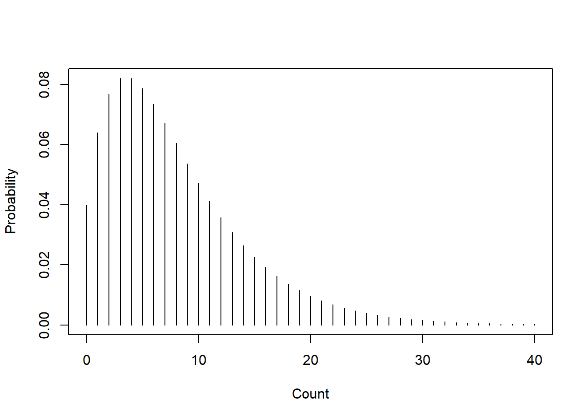
Practice: nest survival
Suppose a nest survives until fledging with probability \(0.85\). Calculate the mean and the variance of this Bernoulli random variable. For which value of \(p\) would the variance be largest?
Solution
The mean is \(p=0.85\) and the variance is \(0.85(1-0.85)=0.1275\). The variance \(p(1-p)\) is largest at \(p=0.5\), where it equals \(0.25\). That is the case in which the two outcomes are equally likely, so the fate of a nest is hardest to predict.
1.2 Binomial distribution
\[ \begin{aligned} \text{R}: &\quad \texttt{dbinom, pbinom, qbinom, rbinom} \\ \text{Type}: &\quad \text{Discrete} \\ \text{Range}: &\quad x = 0, 1, \ldots, n \\ \text{Probability}: &\quad \binom{n}{x}p^x(1-p)^{n-x} \\ \text{Parameters}: &\quad n\;(\texttt{size}) = \text{number of trials};\quad p\;(\texttt{prob}) = \text{success probability} \\ \text{Mean}: &\quad E[X] = np \\ \text{Variance}: &\quad \operatorname{Var}(X) = np(1-p) \\ \text{Inverse}: &\quad p = \mu/n \quad (\text{with } n \text{ fixed}) \end{aligned} \]
The Binomial distribution is useful when every sampling unit contains a fixed number of binary events or outcomes. It models the number of times a particular outcome occurs (e.g., survival, germination, success, etc.). Each event is assumed to be independent of the others and has the same probability of obtaining the outcome of interest.
As seen before, the probability mass function of the Binomial distribution is:
\[ P(X=x)=\binom{n}{x}p^x(1-p)^{n-x} =\frac{n!}{x!(n-x)!}p^x(1-p)^{n-x}, \]
where \(\binom{n}{x}\) counts the ways to choose \(x\) outcomes of interest (each with probability \(p\) of occurring) from \(n\) events and \(n!\) is a factorial.
Applying the relevant formulae, we can derive the mean and variance of a Binomial distribution as:
\[ \mu=E[X]=np \]
and
\[ \operatorname{Var}(X)=np(1-p). \]
1.2.1 Example: seedling survival
Suppose 20 seedlings are planted in each plot and each survives independently with probability \(0.7\). Let \(X\) be the number surviving in one plot. The probability that exactly 14 survive is:
\[ P(X=14) = \binom{20}{14}(0.7)^{14}(1-0.7)^{20-14} = \frac{20!}{14! (20 - 14)!}(0.7)^{14}(0.3)^6 \approx 0.1916. \]
We can verify our math with R:
# Set the Binomial model parameters and the count we want to check.
seedling_count = 20
seedling_survival_probability = 0.7
survivors_to_check = 14
dbinom(
x = survivors_to_check,
size = seedling_count,
prob = seedling_survival_probability
)[1] 0.191639The model gives an expected count of \(20(0.7)=14\) seedlings per plot and a variance of \(20(0.7)(0.3)=4.2\) seedlings squared:
# Calculate the expected count and variance from the Binomial formulas.
expected_survivors = seedling_count * seedling_survival_probability
variance_survivors = seedling_count *
seedling_survival_probability *
(1 - seedling_survival_probability)If a Binomial mean and variance are known, we can invert their formulas. Writing \(m=E[X]\) and \(v=\operatorname{Var}(X)\) gives
\[ \begin{aligned} p &= 1-\frac{v}{m}, \\ n &= \frac{m}{p}. \end{aligned} \]
This conversion requires \(m>0\), a probability \(0<p\leq 1\), and a positive integer result for \(n\). For the model above, it recovers \(p=0.7\) and \(n=20\):
# Recover the Binomial parameters from the model mean and variance.
mean_survivors = expected_survivors
success_probability = 1 - variance_survivors / mean_survivors
estimated_trial_count = mean_survivors / success_probability
Practice: hatching success in a clutch
A clutch contains 12 eggs and each egg hatches independently with probability \(0.6\). Calculate the expected number of hatched eggs and its variance. What is the probability that at least 10 eggs hatch?
Solution
The expected number of hatched eggs is \(12(0.6)=7.2\) and the variance is \(12(0.6)(0.4)=2.88\). The probability of at least 10 hatched eggs is the complement of the cumulative probability for nine:
# Calculate the probability of at least ten hatched eggs out of twelve.
1 - pbinom(q = 9, size = 12, prob = 0.6)[1] 0.08344332The probability is approximately \(0.083\).
1.3 Poisson distribution
\[ \begin{aligned} \text{R}: &\quad \texttt{dpois, ppois, qpois, rpois} \\ \text{Type}: &\quad \text{Discrete} \\ \text{Range}: &\quad x = 0, 1, 2, \ldots \\ \text{Probability}: &\quad \frac{e^{-\lambda}\lambda^x}{x!} \\ \text{Parameters}: &\quad \lambda\;(\texttt{lambda}) = \text{event rate} \\ \text{Mean}: &\quad E[X] = \lambda \\ \text{Variance}: &\quad \operatorname{Var}(X) = \lambda \\ \text{Inverse}: &\quad \lambda = \mu \end{aligned} \]
The Poisson distribution is a common starting point when we count events in a fixed unit of time, area, or sampling effort: insects caught per trap-night, seedlings per quadrat, or camera detections per night. It is often the default distribution for count data when we do not have a fixed upper limit to the number of observations. Its most important property is to always have the same variance and mean, such that when this is not appropriate, we need to switch to other distributions for count data. The Poisson distribution has one parameter:
\[ \lambda=\text{expected count per sampling unit}, \qquad \lambda\geq 0. \]
Its probability mass function is
\[ P(X=x)=\frac{e^{-\lambda}\lambda^x}{x!}, \]
The mean and variance are both equal to \(\lambda\):
\[ \mu = E[X]=\lambda \]
and
\[ \operatorname{Var}(X)=\lambda. \]
1.3.1 Example: wildlife detections
Suppose a camera records an average of \(0.8\) detections/night. If the expected detection count scales with observation time, three nights have expected count
\[ \lambda = 3(0.8) = 2.4. \]
Under an assumed Poisson model, the probability of exactly two detections over those three nights is
\[ P(X=2) = \frac{e^{-2.4}(2.4)^2}{2!} \approx 0.2613. \]
We can calculate it in R:
# Calculate the Poisson mean for three nights and one exact probability.
rate_per_night = 0.8
n_nights = 3
expected_detections = rate_per_night * n_nights
detections_to_check = 2
dpois(x = detections_to_check, lambda = expected_detections)[1] 0.2612677We can also ask the probability of at least five detections in three nights. We can compute this from the cumulative probability (note that we calculate the cumulative probability for four and then take the complement):
# Calculate the probability of at least the requested number of detections.
minimum_detections = 5
1 - ppois(
q = minimum_detections - 1,
lambda = expected_detections
)[1] 0.09586859Unlike a Binomial count, a Poisson count has no fixed upper limit. A count of 100 detections is possible under this model, although extremely unlikely when \(\lambda=2.4\).
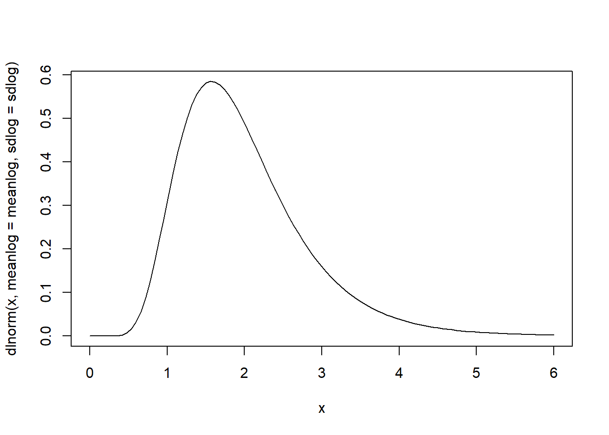
Practice: flowering stems per orchid plot
A survey covers two square metres of a restoration site. Assume flowering stems occur at an average rate of 1.2/m². Calculate the probability of finding exactly three stems in the surveyed area. Why does this model allow counts greater than three, even though three is the count in the question?
Solution
The expected count across two square metres is \(\lambda=2(1.2)=2.4\). The probability is:
# Convert the observation effort into the Poisson mean before calculating a probability.
rate_per_square_metre = 1.2
survey_area = 2
expected_stems = rate_per_square_metre * survey_area
dpois(x = 3, lambda = expected_stems)[1] 0.20901421.4 Conway-Maxwell-Poisson distribution
\[ \begin{aligned} \text{R}: &\quad \texttt{dcompois2} \quad (\text{the other functions are calculated from the probability mass}) \\ \text{Type}: &\quad \text{Discrete} \\ \text{Range}: &\quad x = 0, 1, 2, \ldots \\ \text{Probability}: &\quad \frac{\lambda^x}{(x!)^\nu Z(\lambda, \nu)} \\ \text{Normalising constant}: &\quad Z(\lambda, \nu) = \sum_{j = 0}^{\infty}\frac{\lambda^j}{(j!)^\nu} \\ \text{Parameters}: &\quad \mu\;(\texttt{mean}) > 0 = \text{mean};\quad \nu\;(\texttt{nu}) > 0 = \text{dispersion parameter};\quad \lambda > 0 = \text{rate parameter} \\ \text{Mean}: &\quad E[X] = \lambda\frac{\partial}{\partial\lambda}\log Z(\lambda, \nu) \\ \text{Variance}: &\quad \operatorname{Var}(X) = \lambda\frac{\partial}{\partial\lambda}E[X] \\ \text{Inverse}: &\quad \lambda \text{ is found numerically for a chosen } \mu \text{ and } \nu \text{ (}\texttt{dcompois2}\text{ does this)} \end{aligned} \]
The Conway-Maxwell-Poisson distribution, often abbreviated COM-Poisson or CMP, extends the Poisson distribution by adding a dispersion parameter. It is useful when counts are more regular than a Poisson model allows (underdispersion) as well as when they are more variable (overdispersion). When \(\nu = 1\), it is exactly the Poisson distribution. Values of \(\nu > 1\) produce underdispersion, whereas values of \(0 < \nu < 1\) produce overdispersion.
Its probability mass function is
\[ P(X=x)=\frac{\lambda^x}{(x!)^\nu Z(\lambda, \nu)}, \qquad Z(\lambda, \nu) = \sum_{j = 0}^{\infty}\frac{\lambda^j}{(j!)^\nu}, \]
where \(Z(\lambda, \nu)\) is the normalising constant that makes the probabilities add up to one. A useful way to see what \(\nu\) does is to compare the probabilities of two consecutive counts:
\[ \frac{P(X=x)}{P(X=x-1)}=\frac{\lambda}{x^\nu}. \]
For \(\nu=1\) this ratio is \(\lambda/x\), as in the Poisson distribution. When \(\nu>1\) the ratio decreases faster as \(x\) grows, so the probability is concentrated on fewer counts. When \(\nu<1\) it decreases more slowly, which gives a longer right tail.
Unlike in the Poisson distribution, \(\lambda\) is not generally the mean. The normalising constant \(Z(\lambda, \nu)\) and therefore the mean and the variance have no simple closed form. Because we normally model the mean, the function dcompois2() of RTMB takes the mean \(\mu\) (mean) and \(\nu\) (nu) as arguments and finds the corresponding \(\lambda\) numerically.1 RTMB has no cumulative probability, quantile or random number function for this distribution, so we calculate those from the probability mass, as the example below shows.
1.4.1 Example: clutch size
Counts such as the number of eggs in a clutch often vary less than a Poisson model predicts. Suppose clutch size follows a Conway-Maxwell-Poisson distribution with a mean of \(\mu=2.5\) eggs and \(\nu=2\). We cannot calculate the probabilities by hand, because \(\lambda\) and \(Z(\lambda,\nu)\) have no closed form, so we calculate them in R for clutches of up to 50 eggs (the probability of a larger clutch is negligible):
# nu > 1 gives a distribution that is less variable than a Poisson distribution.
clutch_mean = 2.5
clutch_nu = 2
# Probability mass of clutches with zero to 50 eggs, which adds up to one.
clutch_values = 0:50
clutch_mass = dcompois2(x = clutch_values, mean = clutch_mean, nu = clutch_nu)
sum(clutch_mass)[1] 1# Probabilities of clutches with zero to three eggs.
clutch_mass[1:4][1] 0.02282015 0.17438947 0.33316708 0.28289247We can check these probabilities against the formula. The ratio of the probabilities of two consecutive counts is \(\lambda/x^\nu\), so each ratio multiplied by \(x^\nu\) must give the same number, which is \(\lambda\):
# Ratios of consecutive probabilities (one against zero eggs, two against one, ...).
clutch_ratio = clutch_mass[2:4] / clutch_mass[1:3]
clutch_ratio[1] 7.6419083 1.9104771 0.8491009# Each ratio multiplied by x^nu gives lambda.
clutch_ratio * (1:3)^clutch_nu[1] 7.641908 7.641908 7.641908The three products are the same, \(\lambda\approx 7.64\). The ratios are approximately \(7.64\), \(1.91\) and \(0.85\): the probabilities increase up to a clutch of two eggs and decrease afterwards, so two is the most likely clutch size.
The mean and the variance are sums over the possible clutch sizes:
# Calculate the mean and variance of the clutch size model from the probability mass.
sum(clutch_values * clutch_mass)[1] 2.5sum((clutch_values - clutch_mean)^2 * clutch_mass)[1] 1.391908The mean is \(2.5\) eggs, as we chose, and the variance is approximately \(1.39\) eggs squared. A Poisson distribution with the same mean would have a variance of \(2.5\), so this model is underdispersed relative to the Poisson distribution.
A cumulative probability is a sum of probability mass, and sample() draws random counts with the probabilities of the model:
# Probability of a clutch of at most three eggs.
sum(clutch_mass[clutch_values <= 3])[1] 0.8132692# Simulate the clutch size of ten nests.
set.seed(2026)
sample(x = clutch_values, size = 10, replace = TRUE, prob = clutch_mass) [1] 1 3 2 2 3 2 3 4 2 3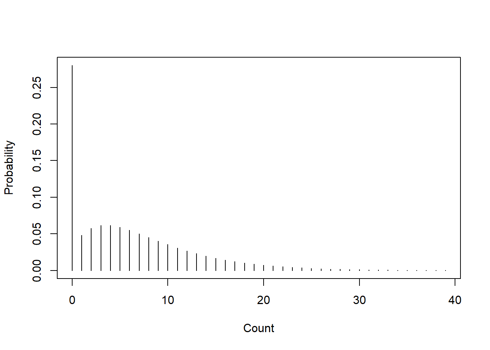
Practice: dispersion in a count model
Calculate the variance of a Conway-Maxwell-Poisson distribution with a mean of \(4.5\) and \(\nu=0.5\). Is this model overdispersed or underdispersed relative to the Poisson distribution?
Solution
# Probability mass up to a count beyond which the probability is negligible.
count_values = 0:100
count_mass = dcompois2(x = count_values, mean = 4.5, nu = 0.5)
sum(count_mass)[1] 1# Calculate the variance for a dispersion parameter smaller than one.
sum((count_values - 4.5)^2 * count_mass)[1] 7.812923The variance is approximately \(7.81\). It is larger than the mean of \(4.5\), so the model is overdispersed relative to the Poisson distribution, as expected for \(\nu<1\).
1.5 Negative Binomial distribution
\[ \begin{aligned} \text{R}: &\quad \texttt{dnbinom2, pnbinom2, qnbinom2, rnbinom2} \quad (\texttt{mu},\ \texttt{size}) \\ &\quad \texttt{dnbinom, pnbinom, qnbinom, rnbinom} \quad (\texttt{size},\ \texttt{prob}) \\ \text{Type}: &\quad \text{Discrete} \\ \text{Range}: &\quad x = 0, 1, 2, \ldots \\ \text{Probability}: &\quad \frac{\Gamma(x+k)}{\Gamma(k)x!}p^k(1-p)^x \\ \text{Parameters}: &\quad k\;(\texttt{size}) = \text{shape};\quad p\;(\texttt{prob}) = \text{probability};\quad \mu\;(\texttt{mu}) = \text{mean} \\ \text{Mean}: &\quad E[X] = k(1-p)/p \\ \text{Variance}: &\quad \operatorname{Var}(X) = k(1-p)/p^2 \\ \text{Inverse}: &\quad p = k/(k+\mu),\ \text{which gives } \operatorname{Var}(X) = \mu + \mu^2/k \end{aligned} \]
When overdispersion occurs, the Negative Binomial distribution is a useful starting model. It has support \(\{0, 1, 2, \ldots\}\) and can accommodate more variation than a Poisson model with the same mean. The Negative Binomial model has two parameters:
- \(\mu>0\): the mean count per sampling unit;
- \(k>0\): a shape parameter that controls the additional variation
The probability mass function is
\[ P(X=x) = \frac{\Gamma(x+k)}{\Gamma(k)x!} \left(\frac{k}{k+\mu}\right)^k \left(\frac{\mu}{k+\mu}\right)^x, \]
where \(\Gamma\) is the gamma function, which extends the factorial to real values.
The mean and variance are:
\[ E[X]=\mu \]
and
\[ \operatorname{Var}(X)=\mu+\frac{\mu^2}{k}. \]
For \(\mu>0\) and finite \(k\), the variance exceeds the mean. At a fixed \(\mu\), smaller \(k\) gives greater variance. As \(k\) increases, the extra variation fades and the variance approaches the mean:
\[ \mu+\frac{\mu^2}{k}\longrightarrow\mu. \]
Thus, the Negative Binomial distribution approaches the Poisson distribution as \(k\) becomes large.
In R, dnbinom2() and related functions, the argument size corresponds to \(k\). This naming can be confusing because size does not mean the sample size here; it is the Negative Binomial shape parameter. The Details section of the documentation page for dnbinom explains why it has that name. Note that dnbinom2() with the arguments mu and size is the function of RTMBdist: RTMB has a function with the same name and other arguments, which is why RTMBdist is loaded second (see the warning in Chapter 4).
1.5.1 Example: seedlings in quadrats
Suppose the mean number of seedlings per quadrat is \(\mu=4\), and the shape parameter is \(k=1.5\). The expected number of seedlings is
\[ E[X]=4. \]
The variance is
\[ \operatorname{Var}(X) = 4+\frac{4^2}{1.5} \approx 14.67. \]
Across comparable quadrats, the model predicts four seedlings on average and a variance of approximately \(14.67\) seedlings squared. That is much more variation than the Poisson model would allow at the same mean.
We can verify these calculations in R:
# Calculate the Negative Binomial mean and variance from its parameters.
mean_seedlings = 4
negative_binomial_size = 1.5
expected_seedlings = mean_seedlings
variance_seedlings = mean_seedlings +
mean_seedlings^2 / negative_binomial_size
c(mean = expected_seedlings, variance = variance_seedlings) mean variance
4.00000 14.66667 The probability of observing exactly 10 seedlings is:
# Calculate the probability of one particular seedling count.
seedlings_to_check = 10
dnbinom2(
x = seedlings_to_check,
mu = mean_seedlings,
size = negative_binomial_size
)[1] 0.02181644The probability of observing at least 10 seedlings is:
# Calculate the probability of at least the requested number of seedlings.
minimum_seedlings = 10
1 - pnbinom2(
q = minimum_seedlings - 1,
mu = mean_seedlings,
size = negative_binomial_size
)[1] 0.08884375Like the Poisson distribution, the Negative Binomial distribution has no fixed upper limit. A count of 100 is mathematically possible, although very unlikely if your mean is 4.
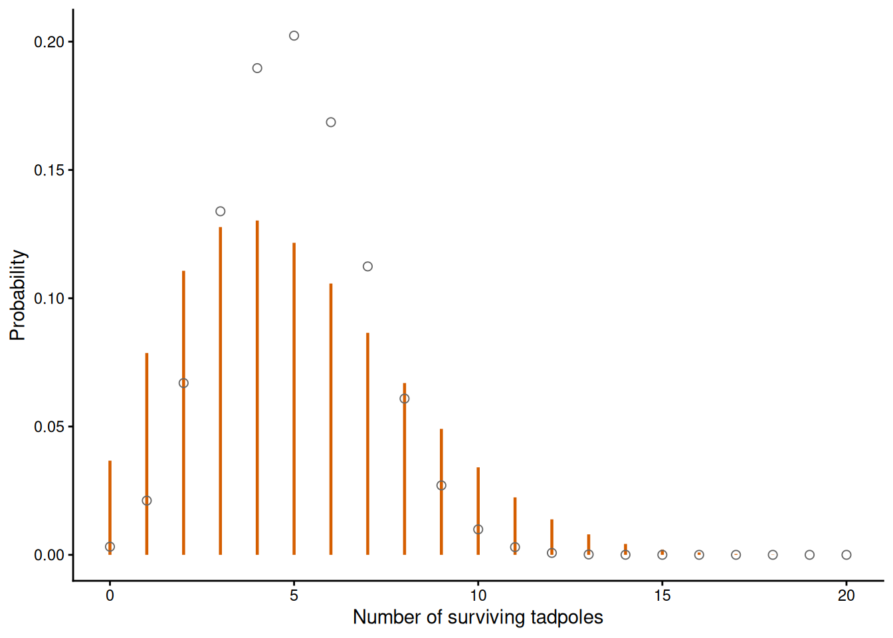
Practice: orchid stem counts with different dispersion
Suppose the mean number of flowering stems per plot is \(\mu=3\). Calculate the Negative Binomial variance for \(k=1.5\) and \(k=6\). Which value gives greater overdispersion? How does increasing \(k\) relate to the Poisson model?
Solution
Using \(\operatorname{Var}(X)=\mu+\mu^2/k\), the variances are 9 and 4.5, respectively. The smaller value of \(k\) gives greater overdispersion. As \(k\) increases, the variance approaches the mean, which is the Poisson mean–variance relationship.
1.6 Beta-Binomial distribution
\[ \begin{aligned} \text{R}: &\quad \texttt{dbetabinom, rbetabinom} \quad (\text{cumulative probabilities from the probability mass}) \\ \text{Type}: &\quad \text{Discrete} \\ \text{Range}: &\quad x = 0, 1, \ldots, n \\ \text{Probability}: &\quad \binom{n}{x}\frac{B(x+a,n-x+b)}{B(a,b)} \\ \text{Parameters}: &\quad n\;(\texttt{size}) = \text{no. trials};\quad a\;(\texttt{shape1}),\ b\;(\texttt{shape2}) = \text{shapes} \\ \text{Mean}: &\quad E[X] = n\frac{a}{a+b} \\ \text{Variance}: &\quad \operatorname{Var}(X) = \frac{nab(a+b+n)} {(a+b)^2(a+b+1)} \\ \text{Inverse}: &\quad \kappa = a+b;\quad a = \kappa\frac{\mu}{n};\quad b = \kappa\left(1-\frac{\mu}{n}\right) \end{aligned} \]
The Beta-Binomial distribution is useful when every sampling unit contains a fixed number of binary events, as in the Binomial distribution, but the probability of the outcome of interest varies from one sampling unit to another. It can be constructed in two steps. First, the probability \(p\) of each sampling unit is drawn from a Beta distribution with shape parameters \(a>0\) and \(b>0\). Then, the count in that unit follows a Binomial distribution with \(n\) trials and that probability \(p\). The result is a count between \(0\) and \(n\) that varies more than a Binomial count with the same mean, that is, it has overdispersion relative to the Binomial distribution.
The probability mass function is
\[ P(X=x)=\binom{n}{x}\frac{B(x+a,\,n-x+b)}{B(a,b)}, \]
where \(B(a,b)=\Gamma(a)\Gamma(b)/\Gamma(a+b)\) is the beta function.
The probability mass function, dbetabinom(), and a random number generator, rbetabinom(), are available in RTMBdist. It has no function for the cumulative probability, which we calculate by adding up the probability mass. I recommend parameterising from mean, size and a precision parameter (\(\kappa\) inverse of a scale, the larger it is the narrower the distribution). Writing \(\bar{p}=a/(a+b)\) for the mean probability across sampling units and \(\kappa=a+b\) for the precision, the mean and variance are:
\[ \mu=E[X]=n\bar{p} \]
and
\[ \operatorname{Var}(X)=n\bar{p}(1-\bar{p})\,\frac{\kappa+n}{\kappa+1}. \]
The first part of the variance, \(n\bar{p}(1-\bar{p})\), is the variance of a Binomial distribution. The factor \((\kappa+n)/(\kappa+1)\) is larger than one whenever \(n>1\) and it represents the additional variation. As \(\kappa\) increases this factor approaches one, so the Beta-Binomial distribution approaches the Binomial distribution.
1.6.1 Example: tadpole survival in tanks
Suppose 20 tadpoles are placed in each tank and the mean survival probability is \(0.25\), but the probability differs among tanks, which we describe with a precision of \(\kappa=12\). The shape parameters are
\[ a = 12(0.25) = 3, \qquad b = 12(1-0.25) = 9. \]
The expected number of survivors per tank is \(20(0.25)=5\) and the variance is
\[ \operatorname{Var}(X) = 20(0.25)(0.75)\,\frac{12+20}{12+1} = 3.75 \times \frac{32}{13} \approx 9.23. \]
A Binomial model with the same mean has a variance of only \(3.75\). We can verify the variance with the formula written in terms of \(a\) and \(b\):
# Convert the mean and precision into the two shape parameters.
tadpole_count = 20
mean_survivors_per_tank = 5
survival_precision = 12
shape1 = survival_precision * mean_survivors_per_tank / tadpole_count
shape2 = survival_precision * (1 - mean_survivors_per_tank / tadpole_count)
# Calculate the variance from the shape parameters.
tadpole_count * shape1 * shape2 * (shape1 + shape2 + tadpole_count) /
((shape1 + shape2)^2 * (shape1 + shape2 + 1))[1] 9.230769The additional variation is most visible in the tails. The probability that at least 10 tadpoles survive in a tank is much higher than under the Binomial model:
# Probability of at least ten survivors under the Beta-Binomial model: the complement
# of the sum of the probability mass from zero to nine survivors.
1 - sum(dbetabinom(x = 0:9, size = tadpole_count, shape1 = shape1, shape2 = shape2))[1] 0.08599111# The same probability under a Binomial model with the same mean.
1 - pbinom(q = 9, size = tadpole_count, prob = mean_survivors_per_tank / tadpole_count)[1] 0.01386442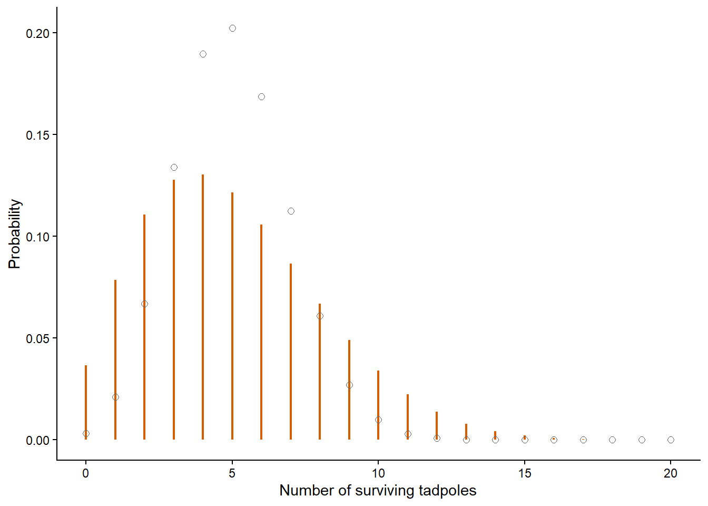
Practice: variation among tanks
For the tadpole example (\(n=20\) and mean survival probability \(0.25\)), calculate the variance of the number of survivors for \(\kappa=2\) and for \(\kappa=100\). Which of the two models is closer to a Binomial distribution?
Solution
The Binomial variance is \(20(0.25)(0.75)=3.75\). For \(\kappa=2\) it is multiplied by \((2+20)/(2+1)\approx 7.33\), which gives a variance of \(27.5\). For \(\kappa=100\) it is multiplied by \((100+20)/(100+1)\approx 1.19\), which gives a variance of approximately \(4.46\). The model with \(\kappa=100\) is closer to the Binomial distribution, because a large precision means that the survival probability hardly varies among tanks.
2 Continuous distribution
Seven distributions for continous data that cover the common scenarios in ecology (note that there is more diversity here than for count data). They are classified based on the values the random variable can take:
Unconstrained - Any real value (from \(-\infty\) to \(\infty\)).
Positive - Any positive real value (from \(0\) to \(\infty\)). Sometimes \(0\) is not included.
Constrained - Any real value within a range \([a,b]\) (from \(a\) to \(b\)). Sometimes the edges (i.e., \(a\) and \(b\)) are not included.
Other distributions that show up in Ecology but I did not cover include Cauchy, Gompertz or Power laws.
2.1 Unconstrained values
Normal - Symmetric distribution. Arises from addition of many small, independent random processes. The most common distribution, especially for measurement error but a lot of ecological variation is not Normal!
Student’s t - Like a Normal distribution but with thicker tails. Useful when dealing with a few extreme values (i.e., robustness against outliers).
2.2 Positive values
All distributions in this category are asymmetric, especially when there is high probability close to 0.
Exponential - Maximum at \(0\). Distribution of waiting times for a single event to happen if the probability of the event per unit of time is constant.
LogNormal - \(X\) follows a LogNormal distribution if \(\text{log}(X)\) follows a Normal distribution. Arises from multiplication of many small, independent random processes. Quite common for processes involving exponential growth.
Gamma - Distribution of waiting times for a certain number of events to happen (same assumption as exponential). Very similar shape to LogNormal.
Weibull - Distribution of waiting times for a single event to happen assuming the probability of the event per unit of time is not constant.
2.3 Constrained values
Uniform - All values within the range are equally likely.
Beta - Values within the range are not equally likely. This distribution can be symmetric or asymmetric (left skewed or right skewed) depending on parameter values.
2.4 Uniform distribution
\[ \begin{aligned} \text{R}: &\quad \texttt{dunif, punif, qunif, runif} \\ \text{Type}: &\quad \text{Continuous} \\ \text{Range}: &\quad \texttt{min} \leq x \leq \texttt{max} \\ \text{Density}: &\quad \frac{1}{b-a},\quad a \leq x \leq b \\ \text{Parameters}: &\quad a\;(\texttt{min}) = \text{lower bound};\quad b\;(\texttt{max}) = \text{upper bound} \\ \text{Mean}: &\quad E[X] = (a+b)/2 \\ \text{Variance}: &\quad \operatorname{Var}(X) = (b-a)^2/12 \\ \end{aligned} \]
The Uniform distribution is the model for a continuous variable that is equally likely to take any value between a lower bound \(a\) and an upper bound \(b\). Its density is constant within those bounds and zero outside them:
\[ f_X(x)=\frac{1}{b-a}, \qquad a \leq x \leq b. \]
Because the density is constant, the probability of an interval only depends on its length. For any \(c\) and \(d\) with \(a \leq c \leq d \leq b\),
\[ P(c \leq X \leq d)=\frac{d-c}{b-a}. \]
The mean and variance are:
\[ \mu=E[X]=\frac{a+b}{2} \]
and
\[ \operatorname{Var}(X)=\frac{(b-a)^2}{12}. \]
The Uniform distribution is rarely a good model for an ecological measurement, but it is a common building block in simulations (e.g., to choose random positions or directions). We also use runif() to construct the random number generator of a zero-inflated distribution (see Section 4).
RTMB and RTMBdist have no Uniform distribution, so the four functions are those of base R. That is enough for calculations and simulations, but dunif() cannot be used in a likelihood that is fitted with the tools of Chapter 4.
2.4.1 Example: position along a transect
Suppose a seedling is equally likely to establish anywhere along a 50 m transect. Let \(X\) be its position in metres, so \(a=0\) and \(b=50\). The density is \(1/50=0.02\)/m and the probability that the seedling establishes between 10 m and 25 m is
\[ P(10 \leq X \leq 25)=\frac{25-10}{50-0}=0.3. \]
The mean position is \((0+50)/2=25\) m and the variance is \(50^2/12\approx 208.3\) m\(^2\), which corresponds to a standard deviation of approximately \(14.4\) m.
We can verify our math with R:
# Set the bounds of the transect in metres.
transect_start = 0
transect_end = 50
# Subtract cumulative probabilities to obtain the probability of an interval.
punif(q = 25, min = transect_start, max = transect_end) -
punif(q = 10, min = transect_start, max = transect_end)[1] 0.3# Calculate the standard deviation of the position.
sqrt((transect_end - transect_start)^2 / 12)[1] 14.43376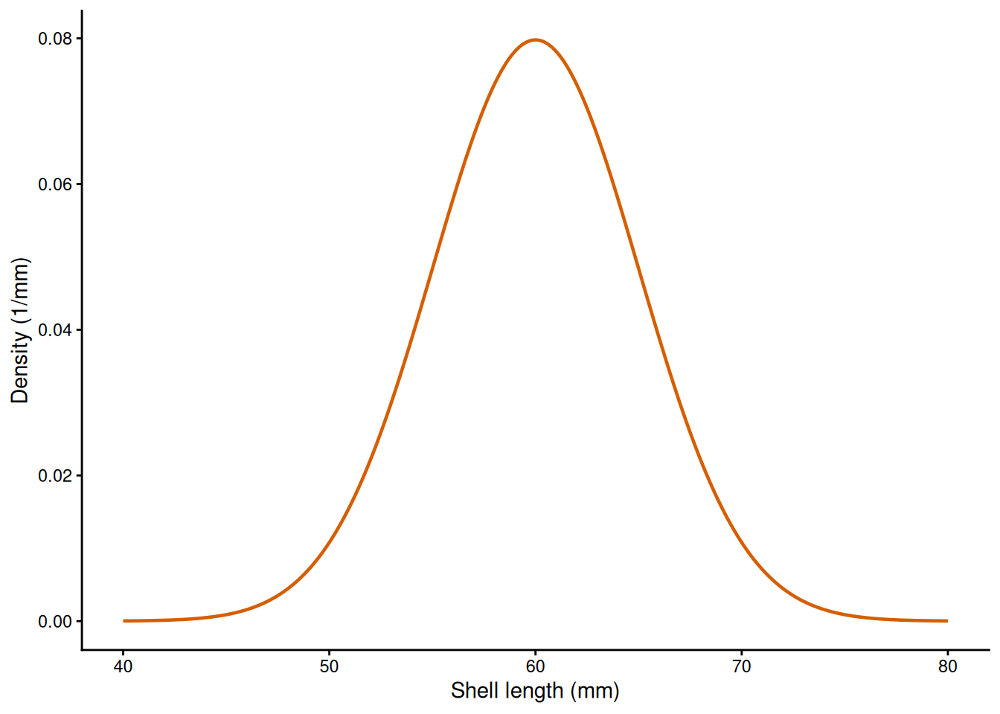
Practice: direction of dispersal
Suppose the direction in which a seed leaves its parent plant is equally likely to be any angle between 0 and 360 degrees. Calculate the probability that the direction falls between 45 and 135 degrees. What is the standard deviation of the direction?
Solution
The interval is 90 degrees long, so the probability is \(90/360=0.25\). The standard deviation is \(\sqrt{360^2/12}\approx 103.9\) degrees:
# Calculate the probability of the interval and the standard deviation.
punif(q = 135, min = 0, max = 360) - punif(q = 45, min = 0, max = 360)[1] 0.25sqrt(360^2 / 12)[1] 103.9232.5 Normal distribution
\[ \begin{aligned} \text{R}: &\quad \texttt{dnorm, pnorm, qnorm, rnorm} \\ \text{Type}: &\quad \text{Continuous} \\ \text{Range}: &\quad -\infty < x < \infty \\ \text{Density}: &\quad \frac{1}{\sigma\sqrt{2\pi}} \exp\left[-\frac{(x-\mu)^2}{2\sigma^2}\right] \\ \text{Parameters}: &\quad \mu\;(\texttt{mean}) = \text{mean};\quad \sigma\;(\texttt{sd}) = \text{standard deviation} \\ \text{Mean}: &\quad E[X] = \mu \\ \text{Variance}: &\quad \operatorname{Var}(X) = \sigma^2 \\ \end{aligned} \]
The Normal distribution is a symmetric model for a continuous variable that can take any real value. It arises when a variable is the sum of many small, independent contributions, which is why it is often used for measurement error. It has two parameters: the mean \(\mu\), which sets the centre of the distribution, and the standard deviation \(\sigma>0\), which sets its spread. We write \(X\sim\operatorname{Normal}(\mu,\sigma^2)\). Note that the second quantity in this notation is the variance, whereas the sd argument in R takes the standard deviation \(\sigma\).
Its probability density function is
\[ f_X(x)=\frac{1}{\sigma\sqrt{2\pi}} \exp\left[-\frac{(x-\mu)^2}{2\sigma^2}\right]. \]
The mean and variance are:
\[ E[X]=\mu \]
and
\[ \operatorname{Var}(X)=\sigma^2. \]
Because the density is symmetric around \(\mu\), the mean, the median and the mode coincide. Approximately 68% of the probability lies within one standard deviation of the mean, 95% within two and 99.7% within three. We can express any value in units of standard deviations with \(Z=(X-\mu)/\sigma\), which follows a Normal distribution with mean \(0\) and variance \(1\) (the standard Normal distribution).
Check the support
A Normal model always assigns some probability to negative values. For a positive measurement such as body mass this is only a concern when zero is within a few standard deviations of the mean; otherwise that probability is negligible. Also check whether the data are strongly skewed to the right, which a symmetric model cannot describe.
2.5.1 Example: shell length of mussels
Suppose the shell length of the mussels in a bed follows a Normal distribution with \(\mu=60\) mm and \(\sigma=5\) mm. A length of 70 mm is two standard deviations above the mean:
\[ z=\frac{70-60}{5}=2. \]
Approximately 95% of the probability lies between 50 mm and 70 mm, so about 5% lies outside that interval. By symmetry, half of it is above 70 mm:
\[ P(X>70)\approx \frac{1-0.95}{2}=0.025. \]
We can calculate it in R:
# Set the parameters of the shell length model in millimetres.
mean_shell = 60
sd_shell = 5
# Use the upper tail for the probability of a length above 70 mm.
pnorm(q = 70, mean = mean_shell, sd = sd_shell, lower.tail = FALSE)[1] 0.02275013The result is approximately \(0.0228\), slightly smaller than our approximation because the interval that contains exactly 95% of the probability is a bit narrower than two standard deviations on each side of the mean.
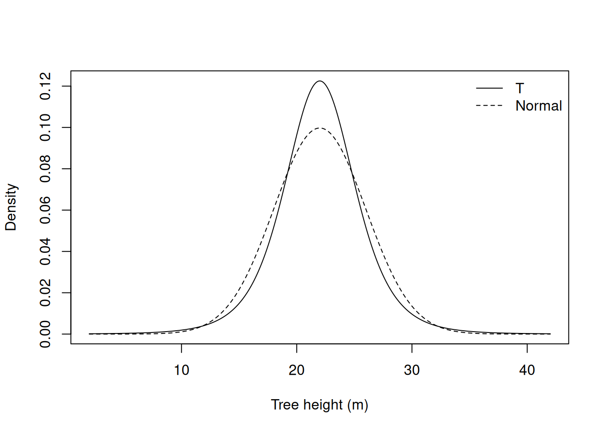
Practice: small mussels and a central interval
For the shell length model above (\(\mu=60\) mm and \(\sigma=5\) mm), calculate the probability that a shell is shorter than 54 mm. Between which two lengths do we find the central 90% of the distribution?
Solution
The probability of a length below 54 mm is a cumulative probability. The central 90% of the distribution lies between the 5% and the 95% quantiles:
# Calculate a lower-tail probability and the quantiles that enclose the central 90%.
pnorm(q = 54, mean = 60, sd = 5)[1] 0.1150697qnorm(p = c(0.05, 0.95), mean = 60, sd = 5)[1] 51.77573 68.22427The probability is approximately \(0.115\) and the interval goes from approximately 51.8 mm to 68.2 mm.
2.6 Student’s t distribution
\[ \begin{aligned} \text{R}: &\quad \texttt{dt, stats::pt, qt, rt} \quad (\text{standardised});\quad \texttt{dt2, pt2, qt2, rt2} \\ \text{Type}: &\quad \text{Continuous} \\ \text{Range}: &\quad -\infty < x < \infty \\ \text{Density}: &\quad \frac{\Gamma((\nu+1)/2)}{s\sqrt{\nu\pi}\,\Gamma(\nu/2)} \left[1+\frac{(x-\mu)^2}{\nu s^2}\right]^{-(\nu+1)/2} \\ \text{Parameters}: &\quad \mu\;(\texttt{mu}) = \text{location};\quad s\;(\texttt{sigma})>0 = \text{scale};\quad \nu\;(\texttt{df})>0 \\ \text{Mean}: &\quad E[X]=\mu \quad (\nu>1) \\ \text{Variance}: &\quad \operatorname{Var}(X)=s^2\frac{\nu}{\nu-2} \quad (\nu>2) \\ \text{Inverse}: &\quad s=\sigma\sqrt{\frac{\nu-2}{\nu}} \quad (\nu>2) \end{aligned} \]
The Student’s t distribution is symmetric and bell-shaped like the Normal distribution, but it has thicker tails. That is, it assigns more probability to values that are far from the centre. This makes it useful when the data contain a few extreme values that a Normal model would treat as practically impossible. It has three parameters: a location \(\mu\) that sets the centre, a scale \(s>0\) that sets the spread and the degrees of freedom \(\nu>0\) that control how thick the tails are. The smaller \(\nu\) is, the thicker the tails. As \(\nu\) increases, the Student’s t distribution approaches the Normal distribution.
Its probability density function is
\[ f_X(x)=\frac{\Gamma((\nu+1)/2)}{s\sqrt{\nu\pi}\,\Gamma(\nu/2)} \left[1+\frac{(x-\mu)^2}{\nu s^2}\right]^{-(\nu+1)/2}, \]
where \(\Gamma\) is the gamma function. The mean and variance are:
\[ E[X]=\mu \qquad (\nu>1) \]
and
\[ \operatorname{Var}(X)=s^2\frac{\nu}{\nu-2} \qquad (\nu>2). \]
Note that the scale \(s\) is not the standard deviation of the distribution. The standard deviation is \(\sigma=s\sqrt{\nu/(\nu-2)}\), which is always larger than \(s\). So, if we want a Student’s t distribution with a particular standard deviation \(\sigma\), we need to use the scale \(s=\sigma\sqrt{(\nu-2)/\nu}\).
The Student’s t distribution functions built into R are standardised (i.e., \(\mu = 0\) and \(s = 1\)) and only depend on the degrees of freedom. If we want a different location or scale, we define our random variable as \(X = \mu + s \cdot T\), where \(T\) follows the standardised Student’s t distribution. In practice, this means that we standardise a value as \((x-\mu)/s\) before passing it to pt(), and that the density is dt((x - mu) / s, df) / s. RTMBdist has its own pt(), which lacks the argument lower.tail, so we write stats::pt() to call the function of base R. RTMBdist also has dt2(), pt2(), qt2() and rt2(), which take the location (mu) and the scale (sigma) as arguments and do the standardisation for us; note that sigma is the scale \(s\) and not the standard deviation. The standardised Student’s t distribution is also the source of the critical values used for some of the confidence intervals in Chapter 3.
2.6.1 Example: shell length with thicker tails
Suppose the shell length of mussels has a mean of 60 mm and a standard deviation of 5 mm, as in the Normal example, but follows a Student’s t distribution with \(\nu=5\). The scale is
\[ s=5\sqrt{\frac{5-2}{5}}\approx 3.87 \text{ mm}. \]
To calculate the probability of a length above 70 mm we first standardise that length:
\[ t=\frac{70-60}{3.87}\approx 2.58. \]
The upper tail probability of the standardised Student’s t distribution at that value is approximately \(0.025\). We can calculate it in R:
# Convert the standard deviation into the scale of the Student's t distribution.
mean_shell = 60
sd_shell = 5
shell_df = 5
shell_scale = sd_shell * sqrt((shell_df - 2) / shell_df)
# Standardise the length before calculating the upper-tail probability.
stats::pt(q = (70 - mean_shell) / shell_scale, df = shell_df, lower.tail = FALSE)[1] 0.02465654# The same probability with the location and the scale as arguments.
pt2(q = 70, mu = mean_shell, sigma = shell_scale, df = shell_df, lower.tail = FALSE)[1] 0.02465654This probability is close to the \(0.023\) of the Normal model. The difference between the two models appears further out in the tail. For a length above 80 mm (four standard deviations above the mean):
# Compare the probability of a very long shell under the Student's t and Normal models.
stats::pt(q = (80 - mean_shell) / shell_scale, df = shell_df, lower.tail = FALSE)[1] 0.001786413pnorm(q = 80, mean = mean_shell, sd = sd_shell, lower.tail = FALSE)[1] 3.167124e-05The Student’s t model gives a probability of approximately \(0.0018\), whereas the Normal model gives approximately \(0.00003\).
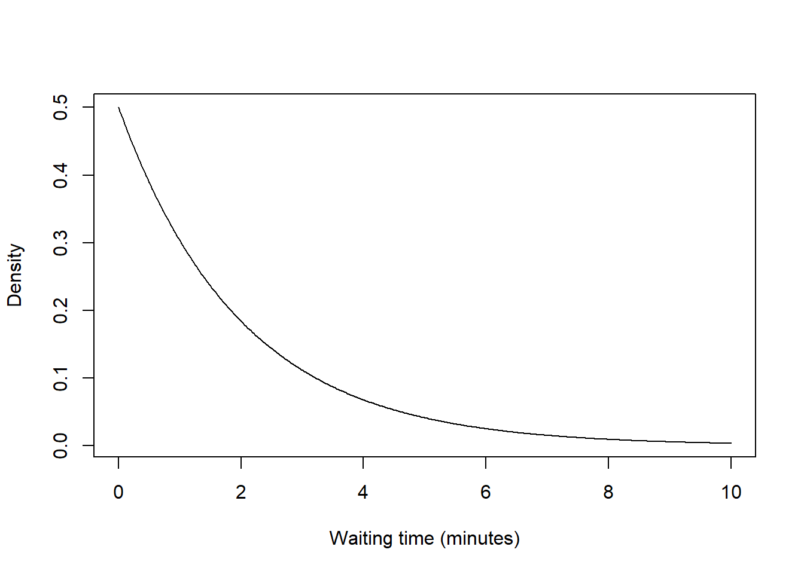
Practice: degrees of freedom and extreme values
Consider two Student’s t models for shell length with a mean of 60 mm and a standard deviation of 5 mm, one with \(\nu=3\) and one with \(\nu=30\). For each model, calculate the probability that a length is more than three standard deviations away from the mean (i.e., below 45 mm or above 75 mm). Compare the results with the Normal model.
Solution
By symmetry, the probability is twice the upper tail probability at 75 mm. For each model we calculate the scale and standardise the length:
# Calculate the two-sided tail probability for each number of degrees of freedom.
scale_df3 = 5 * sqrt((3 - 2) / 3)
2 * stats::pt(q = (75 - 60) / scale_df3, df = 3, lower.tail = FALSE)[1] 0.01384683scale_df30 = 5 * sqrt((30 - 2) / 30)
2 * stats::pt(q = (75 - 60) / scale_df30, df = 30, lower.tail = FALSE)[1] 0.004128405# The same probability under the Normal model.
2 * pnorm(q = 75, mean = 60, sd = 5, lower.tail = FALSE)[1] 0.002699796The probabilities are approximately \(0.014\) for \(\nu=3\), \(0.004\) for \(\nu=30\) and \(0.003\) for the Normal model. The fewer the degrees of freedom, the more probability the model assigns to extreme values, and with \(\nu=30\) the model is already close to the Normal model.
2.7 Exponential distribution
\[ \begin{aligned} \text{R}: &\quad \texttt{dexp, pexp, qexp, rexp} \\ \text{Type}: &\quad \text{Continuous} \\ \text{Range}: &\quad \text{Positive} \\ \text{Density}: &\quad \lambda e^{-\lambda x} \\ \text{Parameters}: &\quad \lambda\;(\texttt{rate})=\ \text{Rate} \\ \text{Mean}: &\quad E[X] = 1/\lambda \\ \text{Variance}: &\quad \operatorname{Var}(X) = 1/\lambda^2 \\ \text{Inverse}: &\quad \lambda = 1/\mu \end{aligned} \]
The Exponential distribution is the model for the waiting time until an event happens, when the event occurs at a constant rate \(\lambda>0\) per unit of time. A constant rate means that the chance of the event happening in the next instant does not depend on how long we have already waited. Under the same assumption, the number of events in a fixed period of time follows a Poisson distribution.
Its probability density function is
\[ f_X(x)=\lambda e^{-\lambda x}, \qquad x \geq 0, \]
which has its maximum at \(x=0\) and decreases from there. The cumulative probability has a simple formula, \(P(X \leq x)=1-e^{-\lambda x}\), so the probability of waiting longer than \(x\) is \(P(X>x)=e^{-\lambda x}\). The mean and variance are:
\[ \mu=E[X]=\frac{1}{\lambda} \]
and
\[ \operatorname{Var}(X)=\frac{1}{\lambda^2}. \]
That is, the standard deviation of an Exponential distribution is always equal to its mean. Note that the rate has units of events per unit of time, whereas the mean has units of time.
2.7.1 Example: waiting for a pollinator
Suppose a flower is visited by a pollinator on average once every 2 minutes. The rate is \(\lambda=1/2=0.5\) visits/min. The probability of waiting more than 5 minutes for the next visit is
\[ P(X>5)=e^{-0.5(5)}=e^{-2.5}\approx 0.0821. \]
We can verify our math with R:
# Convert the mean waiting time (in minutes) into a rate.
mean_waiting_time = 2
visit_rate = 1 / mean_waiting_time
# Use the upper tail for the probability of waiting more than five minutes.
pexp(q = 5, rate = visit_rate, lower.tail = FALSE)[1] 0.082085The median waiting time is the value at which the cumulative probability equals \(0.5\), which is \(\log(2)/\lambda\approx 1.39\) minutes. It is shorter than the mean because the distribution is skewed to the right:
# Calculate the median waiting time with the quantile function.
qexp(p = 0.5, rate = visit_rate)[1] 1.386294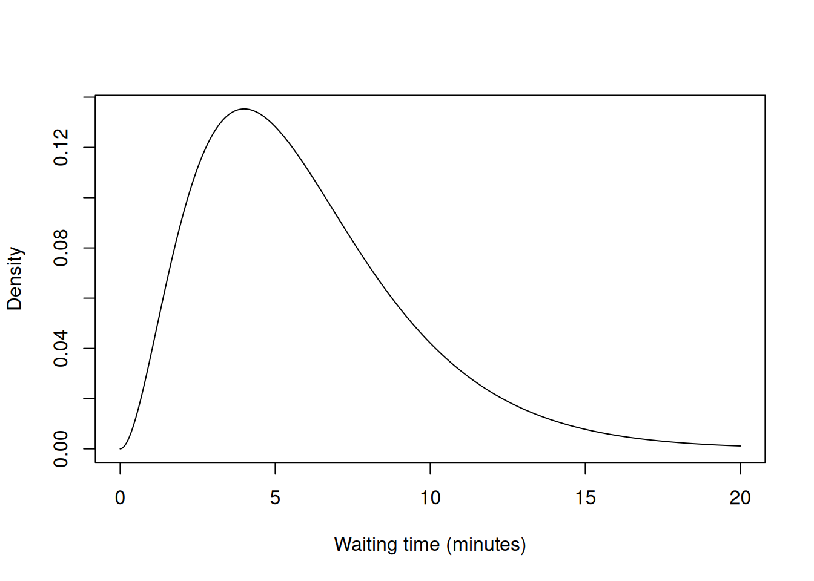
Practice: time until a seed is found
Suppose a seed on the forest floor is found by a seed predator after 4 days on average and that the rate at which seeds are found is constant. Calculate the probability that a seed has not been found after 8 days. What is the median time until a seed is found?
Solution
The rate is \(\lambda=1/4=0.25\)/day. The probability that the seed has not been found after 8 days is \(e^{-0.25(8)}=e^{-2}\approx 0.135\) and the median is \(\log(2)/0.25\approx 2.77\) days:
# Calculate the upper-tail probability and the median for a rate of 0.25/day.
pexp(q = 8, rate = 1 / 4, lower.tail = FALSE)[1] 0.1353353qexp(p = 0.5, rate = 1 / 4)[1] 2.7725892.8 Gamma distribution
\[ \begin{aligned} \text{R}: &\quad \texttt{dgamma, pgamma, qgamma, rgamma} \\ \text{Type}: &\quad \text{Continuous} \\ \text{Range}: &\quad x \geq 0 \\ \text{Density}: &\quad \frac{r^k}{\Gamma(k)} x^{k-1}e^{-rx} \\ \text{Parameters}: &\quad k\;(\texttt{shape}) = \text{shape};\quad r\;(\texttt{rate}) = \text{rate} \\ \text{Mean}: &\quad E[X] = k/r \\ \text{Variance}: &\quad \operatorname{Var}(X) = k/r^2 \\ \text{Inverse}: &\quad r = k/\mu \quad (\text{equivalently, } \texttt{scale}=\mu/k) \end{aligned} \]
The Gamma distribution is a model for positive continuous variables that are skewed to the right. It can be derived as the waiting time until a certain number of events (\(k\)) have happened, when the events occur at a constant rate \(r\). That is, it is the distribution of the sum of \(k\) independent Exponential waiting times, and for \(k=1\) it is the Exponential distribution. However, \(k\) does not need to be an integer and the Gamma distribution is also used as a general model for positive measurements, in the same situations as the LogNormal distribution.
Its probability density function is
\[ f_X(x)=\frac{r^k}{\Gamma(k)}x^{k-1}e^{-rx}, \qquad x \geq 0, \]
where \(k>0\) is the shape, \(r>0\) is the rate and \(\Gamma\) is the gamma function. The mean and variance are:
\[ \mu=E[X]=\frac{k}{r} \]
and
\[ \operatorname{Var}(X)=\frac{k}{r^2}=\frac{\mu^2}{k}. \]
In other words, the standard deviation is proportional to the mean and the coefficient of variation (the standard deviation divided by the mean) is \(1/\sqrt{k}\). So the shape controls the relative variation: the smaller \(k\) is, the more variable and skewed the distribution, whereas for large \(k\) it becomes almost symmetric.
R’s rate and scale are reciprocals: scale = 1/rate. I recommend to parameterise it from the mean and either rate or scale. RTMBdist also has dgamma2(), pgamma2(), qgamma2() and rgamma2(), which take the mean (mean) and the standard deviation (sd) of the distribution as arguments.
2.8.1 Example: waiting for the third pollinator
We continue with the flower that is visited by pollinators at a rate of \(0.5\) visits/min. The waiting time until the third visit follows a Gamma distribution with \(k=3\) and \(r=0.5\)/min. The expected waiting time is
\[ E[X]=\frac{3}{0.5}=6 \text{ minutes} \]
and the variance is
\[ \operatorname{Var}(X)=\frac{3}{0.5^2}=12 \text{ minutes}^2, \]
which corresponds to a standard deviation of approximately \(3.46\) minutes. The probability of waiting more than 10 minutes for the third visit is:
# Set the shape (number of visits) and the rate (visits/min).
visit_shape = 3
visit_rate = 0.5
# Use the upper tail for the probability of waiting more than ten minutes.
pgamma(q = 10, shape = visit_shape, rate = visit_rate, lower.tail = FALSE)[1] 0.124652If we know the mean instead of the rate, we calculate the rate as \(r=k/\mu\). For a mean of 6 minutes and a shape of 3 we recover the same model:
# Calculate the rate from the mean waiting time and the shape.
mean_waiting_time = 6
visit_rate_from_mean = visit_shape / mean_waiting_time
pgamma(q = 10, shape = visit_shape, rate = visit_rate_from_mean, lower.tail = FALSE)[1] 0.124652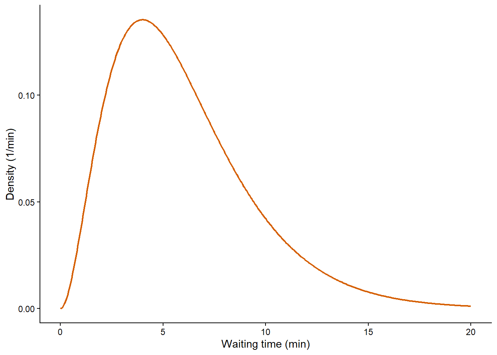
Practice: seedling biomass
Suppose the dry biomass of a seedling follows a Gamma distribution with a mean of 2 g and a shape of 3. Calculate the rate, the variance and the coefficient of variation. What is the probability that a seedling weighs less than 1 g?
Solution
The rate is \(r=3/2=1.5\)/g, the variance is \(2^2/3\approx 1.33\) g\(^2\) and the coefficient of variation is \(1/\sqrt{3}\approx 0.58\). The probability of a biomass below 1 g is a cumulative probability:
# Calculate the rate from the mean and shape, then the lower-tail probability.
biomass_shape = 3
biomass_rate = biomass_shape / 2
pgamma(q = 1, shape = biomass_shape, rate = biomass_rate)[1] 0.1911532The probability is approximately \(0.19\).
2.9 LogNormal distribution
\[ \begin{aligned} \text{R}: &\quad \texttt{dlnorm, plnorm, qlnorm, rlnorm} \\ \text{Type}: &\quad \text{Continuous} \\ \text{Range}: &\quad x > 0 \\ \text{Density}: &\quad \frac{1}{x\,\sigma\sqrt{2\pi}} \exp\left[-\frac{(\log x-\mu)^2}{2\sigma^2}\right] \\ \text{Parameters}: &\quad \mu\;(\texttt{meanlog}) = \text{mean of log}(X);\quad \sigma\;(\texttt{sdlog}) = \text{SD of log}(X) \\ \text{Mean}: &\quad E[X] = \exp(\mu+\sigma^2/2) \\ \text{Variance}: &\quad \operatorname{Var}(X) = \left[\exp(\sigma^2)-1\right]\exp(2\mu+\sigma^2) \\ \text{Inverse}: &\quad \mu = \log(E[X])-\sigma^2/2 \end{aligned} \]
A positive random variable \(X\) follows a LogNormal distribution when its logarithm follows a Normal distribution:
\[ \log(X)\sim\operatorname{Normal}(\mu,\sigma^2). \]
It arises when a variable is the product of many small, independent factors, because the logarithm turns that product into a sum. This makes it a common model for strictly positive measurements that are skewed to the right, such as body mass. Note that \(\mu\) and \(\sigma\) are the mean and standard deviation of \(\log(X)\) and not of \(X\) itself. In R they are the arguments meanlog and sdlog.
Its probability density function is
\[ f_X(x)=\frac{1}{x\sigma\sqrt{2\pi}} \exp\left[-\frac{(\log x-\mu)^2}{2\sigma^2}\right], \qquad x>0. \]
On the original scale, the median is \(e^\mu\), whereas the mean and variance are:
\[ E[X]=e^{\mu+\sigma^2/2} \]
and
\[ \operatorname{Var}(X)=\left(e^{\sigma^2}-1\right)e^{2\mu+\sigma^2}. \]
The mean is always larger than the median because of the long right tail. If we want a LogNormal distribution with a particular mean on the original scale, we need to solve for \(\mu\), which gives \(\mu=\log(E[X])-\sigma^2/2\).
Zero is outside a LogNormal model
The LogNormal distribution cannot generate zero or negative values. A recorded zero could mean absence, a detection limit, or another process, so its meaning should be investigated before changing the values or choosing a model. A zero-inflated distribution (see Section 4) is one possible alternative.
2.9.1 Example: body mass
Suppose body mass in grams follows a LogNormal distribution with \(\mu=\log(30)\) and \(\sigma=0.5\). The median body mass is \(e^{\log(30)}=30\) g and the mean is
\[ E[X]=e^{\log(30)+0.5^2/2}=30\,e^{0.125}\approx 33.99 \text{ g}. \]
To calculate the probability of a body mass above 50 g we can work on the logarithmic scale, where the model is a Normal distribution. In units of standard deviations, the logarithm of 50 g is
\[ z=\frac{\log(50)-\log(30)}{0.5}\approx 1.02 \]
above the mean, and the probability of exceeding that value in a standard Normal distribution is approximately \(0.153\). We can verify our math with R:
# Set the parameters on the logarithmic scale.
meanlog_mass = log(30)
sdlog_mass = 0.5
# Calculate the mean body mass on the original scale.
exp(meanlog_mass + sdlog_mass^2 / 2)[1] 33.99445# The upper-tail probability is the same on the original and the logarithmic scale.
plnorm(q = 50, meanlog = meanlog_mass, sdlog = sdlog_mass, lower.tail = FALSE)[1] 0.153473pnorm(q = (log(50) - meanlog_mass) / sdlog_mass, lower.tail = FALSE)[1] 0.153473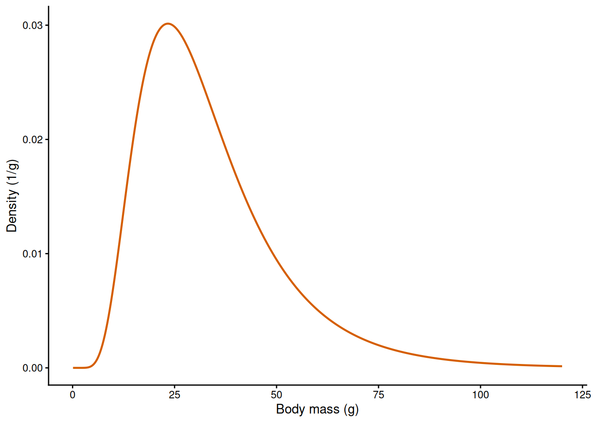
Practice: a model with a chosen mean
Suppose we want a LogNormal model for body mass with \(\sigma=0.5\) and a mean (instead of a median) of 30 g. Which value of \(\mu\) do we need? What is the median body mass of that model?
Solution
We need \(\mu=\log(30)-0.5^2/2\approx 3.28\). The median is \(e^\mu\approx 26.5\) g, which is smaller than the mean, as expected:
# Calculate meanlog from the mean on the original scale, then the median and the mean.
meanlog_from_mean = log(30) - 0.5^2 / 2
meanlog_from_mean[1] 3.276197exp(meanlog_from_mean)[1] 26.47491exp(meanlog_from_mean + 0.5^2 / 2)[1] 302.10 Beta distribution
\[ \begin{aligned} \text{R}: &\quad \texttt{dbeta, pbeta, qbeta, rbeta} \\ \text{Type}: &\quad \text{Continuous} \\ \text{Range}: &\quad 0 \leq x \leq 1 \\ \text{Density}: &\quad \frac{x^{a-1}(1-x)^{b-1}}{B(a,b)} \\ \text{Parameters}: &\quad a\;(\texttt{shape1}),\quad b\;(\texttt{shape2}) = \text{shape parameters} \\ \text{Mean}: &\quad E[X] = a/(a+b) \\ \text{Variance}: &\quad \operatorname{Var}(X) = \frac{ab}{(a+b)^2(a+b+1)} \\ \text{Inverse}: &\quad \kappa=a+b;\quad a=\mu\kappa;\quad b=(1-\mu)\kappa \end{aligned} \]
The Beta distribution is a model for a continuous variable that takes values between \(0\) and \(1\), such as the fraction of a quadrat covered by vegetation or the fraction of a leaf that has been eaten. When a proportion comes from counting outcomes in a known number of trials, the Binomial distribution is the appropriate model. The Beta distribution has two shape parameters, \(a>0\) and \(b>0\).
Its probability density function is
\[ f_X(x)=\frac{x^{a-1}(1-x)^{b-1}}{B(a,b)}, \qquad 0<x<1, \]
where \(B(a,b)=\Gamma(a)\Gamma(b)/\Gamma(a+b)\) is the beta function, which ensures that the total probability is one. The mean and variance are:
\[ \mu=E[X]=\frac{a}{a+b} \]
and
\[ \operatorname{Var}(X)=\frac{ab}{(a+b)^2(a+b+1)}. \]
I recommend to parameterise it from the mean and a precision parameter (the larger it is the narrower the distribution). Writing \(\kappa=a+b\) for the precision, the shape parameters are \(a=\mu\kappa\) and \(b=(1-\mu)\kappa\), and the variance becomes
\[ \operatorname{Var}(X)=\frac{\mu(1-\mu)}{\kappa+1}. \]
RTMBdist has functions with this parameterisation, dbeta2(), pbeta2(), qbeta2() and rbeta2(), in which the argument mu is the mean and phi is the precision \(\kappa\).
The Beta distribution can take many shapes. It is symmetric when \(a=b\), it places more probability towards \(1\) when \(a>b\) and towards \(0\) when \(a<b\). When both parameters are smaller than one the density is U-shaped, and for \(a=b=1\) it is the Uniform distribution between \(0\) and \(1\).
Exact zero and one values
The Beta distribution assigns no probability to an exact value of zero or one. Such observations may be ecologically meaningful (e.g., bare or fully covered quadrats). Do not replace them with small adjustments automatically; first ask how the variable was measured and whether the boundary values need a separate process in the model.
2.10.1 Example: vegetation cover
Suppose the fraction of a quadrat covered by vegetation follows a Beta distribution with \(a=2\) and \(b=5\). The expected cover is
\[ E[X]=\frac{2}{2+5}\approx 0.286 \]
and the variance is
\[ \operatorname{Var}(X)=\frac{2(5)}{(2+5)^2(2+5+1)}=\frac{10}{392}\approx 0.0255, \]
which corresponds to a standard deviation of approximately \(0.16\). We can calculate the probability of a cover below \(0.2\) and the 95% quantile in R:
# Set the two shape parameters of the cover model.
cover_shape1 = 2
cover_shape2 = 5
# Calculate a lower-tail probability and a high quantile.
pbeta(q = 0.2, shape1 = cover_shape1, shape2 = cover_shape2)[1] 0.34464qbeta(p = 0.95, shape1 = cover_shape1, shape2 = cover_shape2)[1] 0.5818034If we start from a mean cover and a precision, we first calculate the shape parameters. For example, a mean cover of \(0.4\) with \(\kappa=10\) corresponds to \(a=0.4(10)=4\) and \(b=0.6(10)=6\):
# Convert the mean and precision into the two shape parameters.
mean_cover = 0.4
cover_precision = 10
shape1_from_mean = mean_cover * cover_precision
shape2_from_mean = (1 - mean_cover) * cover_precision
c(shape1 = shape1_from_mean, shape2 = shape2_from_mean)shape1 shape2
4 6 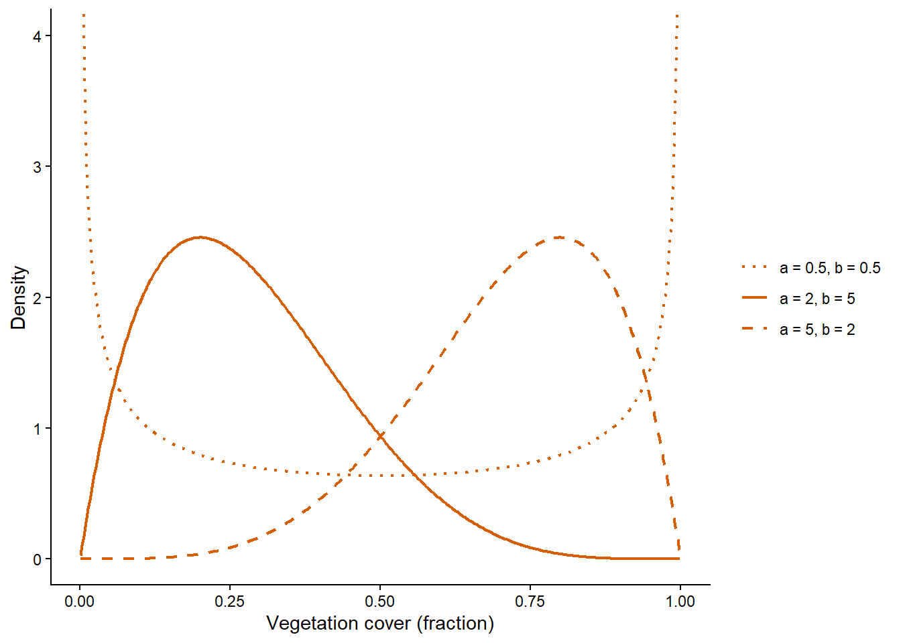
Practice: precision of a cover model
Suppose the mean vegetation cover is \(0.4\). Calculate the shape parameters and the standard deviation of the cover for a precision of \(\kappa=10\) and of \(\kappa=50\). Which model is narrower?
Solution
For \(\kappa=10\) the shape parameters are \(a=4\) and \(b=6\) and the variance is \(0.4(0.6)/11\approx 0.0218\), so the standard deviation is approximately \(0.148\). For \(\kappa=50\) the shape parameters are \(a=20\) and \(b=30\) and the variance is \(0.4(0.6)/51\approx 0.0047\), so the standard deviation is approximately \(0.069\). The model with \(\kappa=50\) is narrower, because a larger precision concentrates the probability around the mean.
2.11 Weibull distribution
\[ \begin{aligned} \text{R}: &\quad \texttt{dweibull, pweibull, qweibull, rweibull} \\ \text{Type}: &\quad \text{Continuous} \\ \text{Range}: &\quad x \geq 0 \\ \text{Density}: &\quad \frac{k}{\lambda}\left(\frac{x}{\lambda}\right)^{k-1} \exp\left[-\left(\frac{x}{\lambda}\right)^k\right] \\ \text{Parameters}: &\quad k\;(\texttt{shape})>0;\quad \lambda\;(\texttt{scale})>0 \\ \text{Mean}: &\quad E[X] = \lambda\Gamma(1+1/k) \\ \text{Variance}: &\quad \operatorname{Var}(X) = \lambda^2\left[\Gamma(1+2/k)-\Gamma(1+1/k)^2\right] \\ \text{Inverse}: &\quad \lambda = \frac{\mu}{\Gamma(1+1/k)} \end{aligned} \]
The Weibull distribution is a model for the waiting time until a single event happens when the rate at which the event occurs changes with time. It is often used for lifespans and survival times. It has a shape parameter \(k>0\) and a scale parameter \(\lambda>0\), where the scale has the same units as the waiting time. The shape determines how the rate changes: for \(k<1\) the rate decreases with time (e.g., when mortality is highest in young individuals), for \(k>1\) it increases with time (e.g., when mortality increases with age) and for \(k=1\) it is constant, in which case we recover the Exponential distribution with rate \(1/\lambda\).
Its probability density function is
\[ f_X(x)=\frac{k}{\lambda}\left(\frac{x}{\lambda}\right)^{k-1} \exp\left[-\left(\frac{x}{\lambda}\right)^k\right], \qquad x \geq 0. \]
The probability that the event has not yet happened at time \(x\) has a simple formula:
\[ P(X>x)=\exp\left[-\left(\frac{x}{\lambda}\right)^k\right]. \]
The mean and variance are:
\[ \mu=E[X]=\lambda\,\Gamma\left(1+\frac{1}{k}\right) \]
and
\[ \operatorname{Var}(X)=\lambda^2\left[\Gamma\left(1+\frac{2}{k}\right)- \Gamma\left(1+\frac{1}{k}\right)^2\right], \]
where \(\Gamma\) is the gamma function (gamma() in R). I show below how to parameterise from the mean and shape.
2.11.1 Example: leaf lifespan
Suppose the lifespan of a leaf has a mean of 2 years and follows a Weibull distribution with shape \(k=1.5\). The scale is
\[ \lambda=\frac{2}{\Gamma(1+1/1.5)}\approx\frac{2}{0.9027}\approx 2.215 \text{ years}. \]
The probability that a leaf lives longer than 3 years is
\[ P(X>3)=\exp\left[-\left(\frac{3}{2.215}\right)^{1.5}\right] \approx e^{-1.576}\approx 0.207. \]
We can verify our math with R:
# Calculate the scale from the mean lifespan (in years) and the shape.
mean_lifespan = 2
lifespan_shape = 1.5
lifespan_scale = mean_lifespan / gamma(1 + 1 / lifespan_shape)
lifespan_scale[1] 2.215464# Use the upper tail for the probability of living longer than three years.
pweibull(q = 3, shape = lifespan_shape, scale = lifespan_scale, lower.tail = FALSE)[1] 0.2068543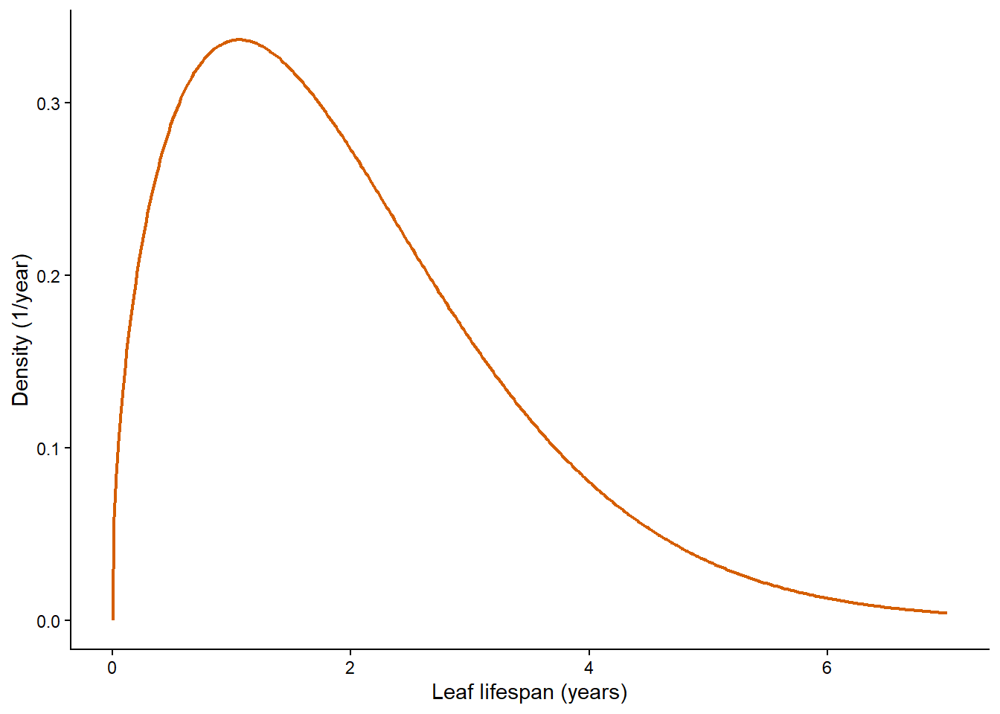
Practice: seedling survival time
Suppose the survival time of a seedling follows a Weibull distribution with shape \(k=0.8\) and scale \(\lambda=2\) years. Does the mortality rate increase or decrease with age? Calculate the probability that a seedling survives its first year and the mean survival time.
Solution
The shape is smaller than one, so the mortality rate decreases with age. The probability of surviving the first year is \(\exp[-(1/2)^{0.8}]\approx 0.563\) and the mean survival time is \(2\,\Gamma(1+1/0.8)\approx 2.27\) years:
# Calculate the probability of surviving beyond one year and the mean survival time.
pweibull(q = 1, shape = 0.8, scale = 2, lower.tail = FALSE)[1] 0.56307122 * gamma(1 + 1 / 0.8)[1] 2.2660063 Multivariate distributions
These are distributions of multiple random variables that are not independent. They appear in two main context:
Quantifying uncertainty or variation in parameters (typically the multivariate normal).
Modelling multiple types of observations that are ecologically correlated.
Multinomial - Generalizes the Binomial distribution to \(K\) categories. The counts across categories must sum to the fixed number of trials \(N\). For example counts across several species or habitat categories when the total number of observations is fixed.
Multivariate Normal - Generalizes the Normal distribution to \(K\) correlated random variables. Each variable is characterized by its mean and standard deviation but we also defined a correlation coefficient for each pair of variables. The basis of multivariate statistics for unconstrained, continuous data and also shows up when quantifying uncertainty/variation in parameters or when modelling time series with autocorrelation.
Dirichlet - Generalizes the Beta distribution to \(K\) correlated random variables. Each of the random variables is constrained between 0 and 1 but also, the sum of all the variables is always equal to 1. Useful to model proportions of a community across species or partitioning of biomass across different compartments, soil texture, etc.
This area of probability is (relatively) less explored. If you are really interested in multivariate modelling, I suggest to take a look into copulas but note that this is way beyond the scope of this course and a very rare skill among ecological modelers, so it might be too hard to tackle now.
3.1 Multinomial distribution
\[ \begin{aligned} \text{R}: &\quad \texttt{dmultinom, rmultinom} \\ \text{Type}: &\quad \text{Discrete, multivariate} \\ \text{Range}: &\quad x_i \in \{0,1,\ldots,n\},\quad \sum_{i=1}^K x_i=n \\ \text{Probability}: &\quad \frac{n!}{\prod_{i=1}^K x_i!}\prod_{i=1}^K p_i^{x_i} \\ \text{Parameters}: &\quad n\;(\texttt{size}) = \text{number of trials};\quad p_i\;(\texttt{prob}) = \text{probability of category }i,\quad \sum_i p_i=1 \\ \text{Mean}: &\quad \mu_i = np_i \\ \text{Variance}: &\quad \operatorname{Var}(X_i)=np_i(1-p_i) \\ \text{Covariance}: &\quad \operatorname{Cov}(X_i,X_j)=-np_ip_j,\quad i\ne j \\ \text{Inverse}: &\quad p_i = \mu_i/n,\quad \sum_i\mu_i=n \end{aligned} \]
The Multinomial distribution generalises the Binomial distribution to events that have more than two possible outcomes. Each of \(n\) independent events falls into one of \(K\) categories, where category \(i\) has probability \(p_i\) and the probabilities add up to one. The random variables \(X_1, \ldots, X_K\) are the number of events in each category, so they always add up to \(n\).
The probability mass function is
\[ P(X_1=x_1,\ldots,X_K=x_K)=\frac{n!}{x_1!\cdots x_K!}\,p_1^{x_1}\cdots p_K^{x_K}, \]
where the first factor counts the number of ways in which the \(n\) events can be assigned to the categories. The mean and variance of each count are:
\[ E[X_i]=np_i \]
and
\[ \operatorname{Var}(X_i)=np_i(1-p_i). \]
These are the mean and variance of a Binomial distribution. In fact, each count on its own follows a Binomial distribution with \(n\) trials and probability \(p_i\). However, the counts are not independent of each other. Because the total is fixed, a higher count in one category leaves fewer events for the others, which results in a negative covariance:
\[ \operatorname{Cov}(X_i,X_j)=-np_ip_j, \qquad i \neq j. \]
3.1.1 Example: species in a sample
Suppose we capture 20 individuals and each of them belongs to one of three species with probabilities \(0.25\), \(0.4\) and \(0.35\). The expected counts are \(20(0.25)=5\), \(20(0.4)=8\) and \(20(0.35)=7\). The probability of capturing exactly those numbers is
\[ P(X_1=5,X_2=8,X_3=7) = \frac{20!}{5!\,8!\,7!}(0.25)^5(0.4)^8(0.35)^7 \approx 0.0411, \]
and the covariance between the counts of the first two species is \(-20(0.25)(0.4)=-2\). We can verify the probability in R:
# Set the number of captured individuals and the probability of each species.
captured_count = 20
species_probability = c(0.25, 0.4, 0.35)
# Probability of one particular combination of counts.
dmultinom(x = c(5, 8, 7), size = captured_count, prob = species_probability)[1] 0.04108172We can check the means and the covariance by simulating many samples. Note that rmultinom() returns a matrix with one row per category and one column per sample:
# Simulate 5000 samples of 20 individuals.
set.seed(2026)
species_counts = rmultinom(n = 5000, size = captured_count, prob = species_probability)
# Every sample adds up to the total number of individuals.
range(colSums(species_counts))[1] 20 20# Average count per species and covariance between the first two species.
rowMeans(species_counts)[1] 4.9834 7.9938 7.0228cov(species_counts[1, ], species_counts[2, ])[1] -1.878479The averages and the covariance of the simulated samples are close to the values of the model.
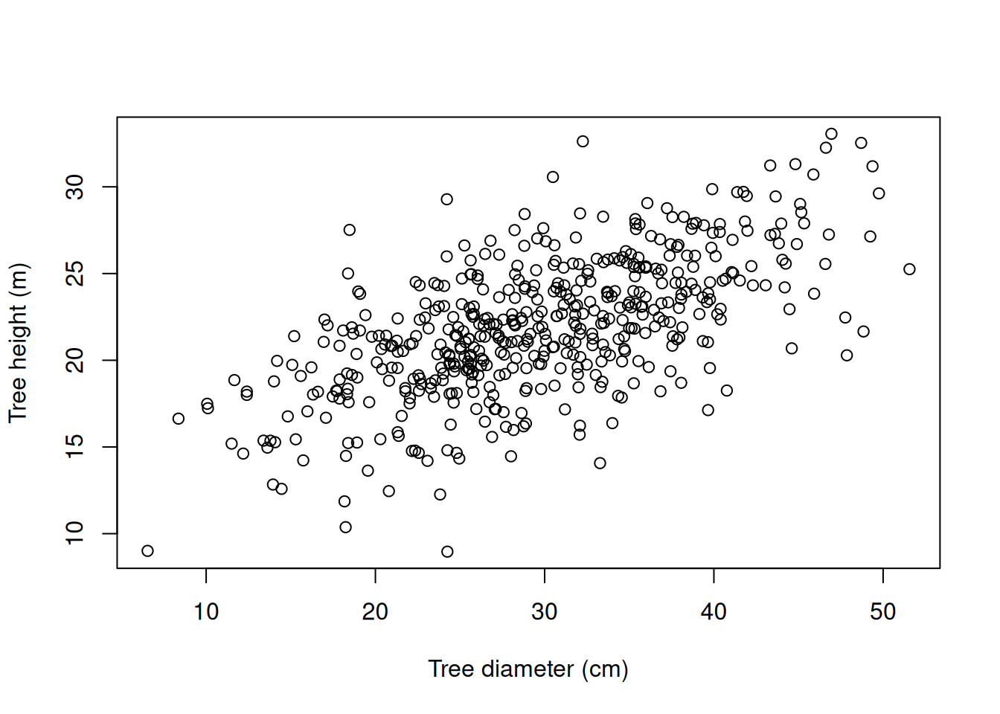
Practice: habitat use
An animal is observed on 10 independent occasions and on each occasion it is in one of three habitats with probabilities \(0.5\), \(0.3\) and \(0.2\). Calculate the probability of observing it 5, 3 and 2 times in each habitat, respectively. What is the covariance between the counts in the first two habitats?
Solution
The probability is
\[ \frac{10!}{5!\,3!\,2!}(0.5)^5(0.3)^3(0.2)^2 = 2520 \times 0.00003375 \approx 0.085, \]
and the covariance is \(-10(0.5)(0.3)=-1.5\). In R:
# Probability of one particular combination of counts across the three habitats.
dmultinom(x = c(5, 3, 2), size = 10, prob = c(0.5, 0.3, 0.2))[1] 0.085053.2 Multivariate Normal distribution
\[ \begin{aligned} \text{R}: &\quad \texttt{dmvnorm};\quad \texttt{MASS::mvrnorm} \\ \text{Type}: &\quad \text{Continuous, multivariate} \\ \text{Range}: &\quad \mathbf{x}\in\mathbb{R}^K \\ \text{Density}: &\quad \frac{1}{(2\pi)^{K/2}|\boldsymbol{\Sigma}|^{1/2}} \exp\left[ -\frac{1}{2}(\mathbf{x}-\boldsymbol{\mu})^\mathsf{T} \boldsymbol{\Sigma}^{-1}(\mathbf{x}-\boldsymbol{\mu}) \right] \\ \text{Parameters}: &\quad \boldsymbol{\mu}\;(\texttt{mu}) = \text{mean vector};\quad \boldsymbol{\Sigma}\;(\texttt{Sigma}) = \text{covariance matrix} \\ \text{Mean}: &\quad \operatorname{E}[\mathbf{X}]=\boldsymbol{\mu} \\ \text{Covariance}: &\quad \operatorname{Cov}(\mathbf{X})=\boldsymbol{\Sigma} \\ \text{Inverse}: &\quad \Sigma_{ii}=\sigma_i^2;\quad \Sigma_{ij}=\rho_{ij}\sigma_i \sigma_j\quad(i\ne j) \end{aligned} \]
The Multivariate Normal distribution generalises the Normal distribution to \(K\) continuous random variables that are correlated with each other. It has two parameters: a vector \(\boldsymbol{\mu}\) with the mean of each variable and a covariance matrix \(\boldsymbol{\Sigma}\) with \(K\) rows and \(K\) columns. The diagonal of the covariance matrix contains the variance of each variable and the other elements contain the covariance between each pair of variables.
Its probability density function is
\[ f_{\mathbf{X}}(\mathbf{x})= \frac{1}{(2\pi)^{K/2}|\boldsymbol{\Sigma}|^{1/2}} \exp\left[ -\frac{1}{2}(\mathbf{x}-\boldsymbol{\mu})^\mathsf{T} \boldsymbol{\Sigma}^{-1}(\mathbf{x}-\boldsymbol{\mu}) \right], \]
where \(|\boldsymbol{\Sigma}|\) is the determinant of the covariance matrix and \(\boldsymbol{\Sigma}^{-1}\) is its inverse.
It is usually easier to think in terms of standard deviations and correlations than in terms of covariances. If \(\sigma_i\) is the standard deviation of variable \(i\) and \(\rho_{ij}\) is the correlation between variables \(i\) and \(j\), the elements of the covariance matrix are:
\[ \Sigma_{ii}=\sigma_i^2 \]
and
\[ \Sigma_{ij}=\rho_{ij}\sigma_i\sigma_j, \qquad i \neq j. \]
Each variable on its own follows a Normal distribution with mean \(\mu_i\) and variance \(\sigma_i^2\). When all the correlations are zero, the variables are independent.
3.2.1 Example: length and width of mussel shells
Suppose the length and the width of the shell of a mussel follow a Multivariate Normal distribution. The length has a mean of 60 mm and a standard deviation of 5 mm, the width has a mean of 30 mm and a standard deviation of 3 mm, and the correlation between them is \(0.6\). The covariance between length and width is
\[ \Sigma_{12}=0.6(5)(3)=9, \]
so the covariance matrix is
\[ \boldsymbol{\Sigma}= \begin{pmatrix} 5^2 & 9 \\ 9 & 3^2 \end{pmatrix} = \begin{pmatrix} 25 & 9 \\ 9 & 9 \end{pmatrix}. \]
We can construct this matrix in R from the standard deviations and the correlation matrix:
# Set the means, standard deviations and correlation matrix of shell length and width.
shell_means = c(length = 60, width = 30)
shell_sds = c(5, 3)
shell_correlation = matrix(c(1, 0.6,
0.6, 1), nrow = 2)
# diag() creates a matrix with the standard deviations on its diagonal and
# %*% is matrix multiplication.
Sigma = diag(shell_sds) %*% shell_correlation %*% diag(shell_sds)
Sigma [,1] [,2]
[1,] 25 9
[2,] 9 9The density function is dmvnorm() of RTMB. At the means, the exponent of the density is zero, and the determinant of this covariance matrix is \(25(9)-9(9)=144\), so the density is \(1/(2\pi\sqrt{144})\approx 0.0133\)/mm\(^2\):
# Density at the mean length and width.
dmvnorm(x = c(60, 30), mu = shell_means, Sigma = Sigma)[1] 0.01326291RTMB has no random number generator for this distribution, but we can generate random samples with the function mvrnorm() from the MASS package:
library(MASS) # Install it first
# Simulate 5000 mussels. Each row is a mussel and each column a variable.
set.seed(2026)
shell_draws = mvrnorm(n = 5000, mu = shell_means, Sigma = Sigma)
# The means and covariances of the sample are close to those of the model.
colMeans(shell_draws) length width
60.05366 29.98649 cov(shell_draws) length width
length 24.820913 8.670962
width 8.670962 8.860767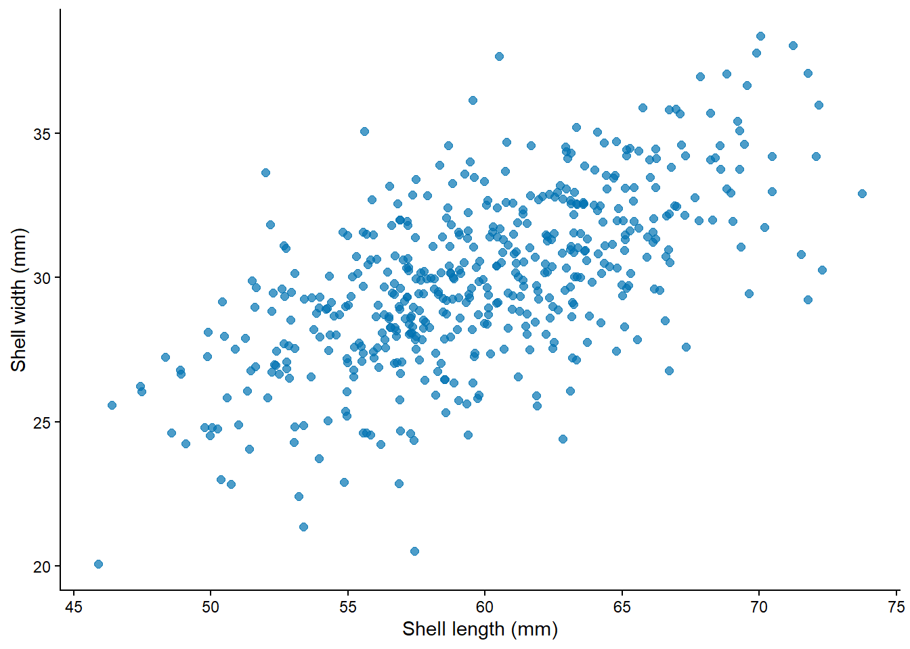
Practice: a covariance matrix for two traits
Suppose the wing length of a bird has a standard deviation of 2 mm, its body mass has a standard deviation of 3 g and the correlation between the two traits is \(0.8\). Write down the covariance matrix. What would the covariance matrix be if the two traits were independent?
Solution
The variances are \(2^2=4\) and \(3^2=9\) and the covariance is \(0.8(2)(3)=4.8\), so
\[ \boldsymbol{\Sigma}= \begin{pmatrix} 4 & 4.8 \\ 4.8 & 9 \end{pmatrix}. \]
If the traits were independent the correlation would be zero, so the covariance would also be zero and only the variances on the diagonal would remain.
3.3 Dirichlet distribution
\[ \begin{aligned} \text{R}: &\quad \texttt{ddirichlet, rdirichlet} \\ \text{Type}: &\quad \text{Continuous, multivariate} \\ \text{Range}: &\quad x_i>0,\quad \sum_{i=1}^K x_i=1 \\ \text{Density}: &\quad \frac{\Gamma(\alpha_0)}{\prod_{i=1}^K\Gamma(\alpha_i)} \prod_{i=1}^K x_i^{\alpha_i-1}, \quad \alpha_0=\sum_{i=1}^K\alpha_i \\ \text{Parameters}: &\quad \alpha_i>0\;(\texttt{alpha}) = \text{shape parameters} \\ \text{Mean}: &\quad \mu_i=\alpha_i/\alpha_0 \\ \text{Variance}: &\quad \operatorname{Var}(X_i)=\frac{\mu_i(1-\mu_i)}{\alpha_0+1} \\ \text{Covariance}: &\quad \operatorname{Cov}(X_i,X_j)=\frac{-\mu_i\mu_j}{\alpha_0+1},\quad i\ne j \\ \text{Inverse}: &\quad \alpha_0=\kappa;\quad \alpha_i=\kappa\mu_i \end{aligned} \]
The Dirichlet distribution generalises the Beta distribution to \(K\) continuous random variables that are each between \(0\) and \(1\) and that always add up to one. It is therefore a model for how a total is divided among several components, such as the fractions of sand, silt and clay in a soil. It has one shape parameter \(\alpha_i>0\) per component and for \(K=2\) it reduces to the Beta distribution.
Its probability density function is
\[ f_{\mathbf{X}}(\mathbf{x})= \frac{\Gamma(\alpha_0)}{\prod_{i=1}^K\Gamma(\alpha_i)} \prod_{i=1}^K x_i^{\alpha_i-1}, \qquad \alpha_0=\sum_{i=1}^K\alpha_i, \]
where \(\Gamma\) is the gamma function. The sum of the shape parameters, \(\alpha_0\), plays the role of a precision (the larger it is, the less the fractions vary). The mean and variance of each fraction are:
\[ \mu_i=E[X_i]=\frac{\alpha_i}{\alpha_0} \]
and
\[ \operatorname{Var}(X_i)=\frac{\mu_i(1-\mu_i)}{\alpha_0+1}. \]
As in the Multinomial distribution, the fractions are not independent. Because they add up to one, a larger fraction for one component leaves less for the others, which results in a negative covariance:
\[ \operatorname{Cov}(X_i,X_j)=\frac{-\mu_i\mu_j}{\alpha_0+1}, \qquad i \neq j. \]
As with the Beta distribution, it is convenient to parameterise the Dirichlet distribution from the mean fractions and a precision \(\kappa=\alpha_0\), so that \(\alpha_i=\kappa\mu_i\).
RTMBdist provides the density, ddirichlet(), and a random number generator, rdirichlet(), which is enough for this course.
3.3.1 Example: biomass partitioning
Suppose a plant allocates on average 20% of its biomass to leaves, 30% to stems and 50% to roots, and that these fractions vary among plants according to a Dirichlet distribution with precision \(\kappa=12\). The shape parameters are
\[ \alpha_1=12(0.2)=2.4, \qquad \alpha_2=12(0.3)=3.6, \qquad \alpha_3=12(0.5)=6. \]
The variance of the fraction allocated to roots is
\[ \operatorname{Var}(X_3)=\frac{0.5(1-0.5)}{12+1}\approx 0.0192, \]
which corresponds to a standard deviation of approximately \(0.139\). We can check these values by simulating many plants:
# Convert the mean fractions and the precision into the shape parameters.
fraction_means = c(leaves = 0.2, stems = 0.3, roots = 0.5)
fraction_precision = 12
alpha = fraction_precision * fraction_means
# Simulate 5000 plants. Each row is a plant and each column a fraction.
set.seed(2026)
biomass_draws = rdirichlet(n = 5000, alpha = alpha)
# The fractions of every plant add up to one.
range(rowSums(biomass_draws))[1] 1 1# Average fraction per component and variance of the fraction allocated to roots.
colMeans(biomass_draws)[1] 0.1991646 0.3016528 0.4991826var(biomass_draws[, 3])[1] 0.01903802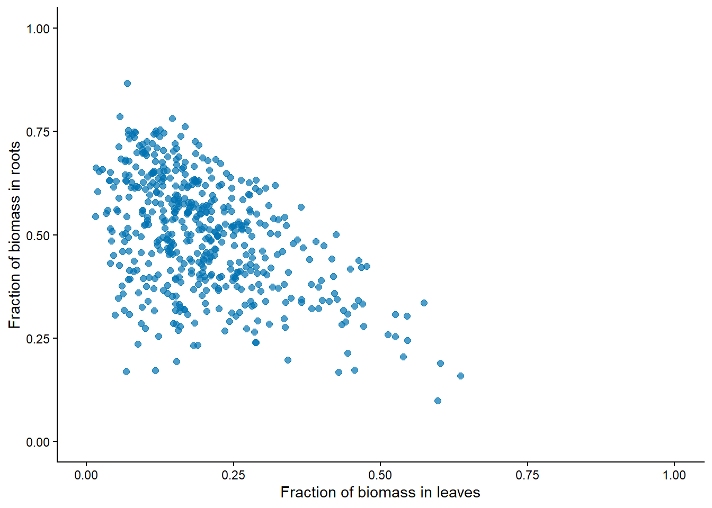
Practice: soil texture
Suppose the mean fractions of sand, silt and clay in the soils of a region are \(0.6\), \(0.3\) and \(0.1\), and that they vary among sites according to a Dirichlet distribution with precision \(\kappa=50\). Calculate the shape parameters and the standard deviation of the clay fraction.
Solution
The shape parameters are \(50(0.6)=30\), \(50(0.3)=15\) and \(50(0.1)=5\). The variance of the clay fraction is \(0.1(0.9)/51\approx 0.00176\), so its standard deviation is approximately \(0.042\).
4 How to make zero-inflated distributions
A zero-inflated distribution is a mixture of two distributions:
A Bernoulli distribution associated to a binary process.
Any other distribution (discrete or continuous) that may or may not contain zeros.
The idea is that each distribution in the mixture represents a different process. The first process decides whether a sampling unit can have a positive value at all: with probability \(p_{0}\) it cannot, and its value is zero. That is represented by the Bernoulli distribution mentioned above. Where a positive value is possible, the second distribution describes the value (which may still be zero if that distribution contains zeros).
For a discrete distribution with probability mass function \(p(x)\), the zero-inflated version is going to look like this:
\[ \begin{aligned} p_{\text{inf}}(x) &= \begin{cases} p_{\text{0}} + &(1 - p_{\text{0}})p(0), & x = 0,\\ &(1- p_{\text{0}})p(x), & x\gt 0. \end{cases} \end{aligned} \]
Notice how there are two terms for \(x = 0\), one comes from the Bernoulli distribution (\(p_0\)) and the other one comes from the original (non-inflated) distribution (\(p(0)\)). Also notice how the original distribution has to be scaled by a factor \((1- p_{\text{0}})\). This is to ensure, as always, that probabilities add up to 1.
For a positive continuous distribution with density \(f(x)\) the two parts must be stated separately, because a probability is never added to a density. The value zero has a probability and the positive values have a density:
\[ P(X = 0) = p_{\text{0}}, \qquad f_{\text{inf}}(x) = (1 - p_{\text{0}})f(x) \quad \text{for } x \gt 0. \]
That is, the density of the positive values integrates to \(1 - p_{\text{0}}\), which together with the probability of a zero adds up to 1.
RTMBdist implements zero-inflated versions of several distributions (e.g., dzipois(), dzibinom(), dzinbinom(), dzinbinom2() and dzigamma()), in which the argument zeroprob is \(p_{0}\), but we can easily implement our own, which shows how the formulas above become code. Below is an example of how to define the dpqr functions for a discrete distribution, the zero-inflated Negative Binomial. Their names start with my_ so that they do not replace the functions of RTMBdist.
# The mass/density function you will use for the likelihood, including log
my_dzinbinom = function(x, size, ..., pzero, log = FALSE) {
baseline = dnbinom(x, size = size, ..., log = FALSE)
result = (1 - pzero) * baseline
result = ifelse(x == 0, pzero + result, result)
if (log) log(result) else result
}
# The random number generator for sampling
my_rzinbinom = function(n, size, ..., pzero) {
# Original distribution
result = rnbinom(n, size = size, ...)
# Bernoulli distribution
result[runif(length(result)) < pzero] = 0
result
}
# Cumulative probability for tail probabilities and p-values
my_pzinbinom = function(q, size, ..., pzero,
lower.tail = TRUE, log.p = FALSE) {
baseline = pnbinom(q, size = size, ...,
lower.tail = TRUE, log.p = FALSE)
result = ifelse(q < 0, 0, pzero + (1 - pzero) * baseline)
if (!lower.tail) result = 1 - result
if (log.p) log(result) else result
}
# Quantile function (assuming 0 < pzero < 1)
my_qzinbinom = function(p, size, ..., pzero, lower.tail = TRUE) {
# Switch between lower or upper tail
if (!lower.tail) p = 1 - p
# Quantile in the original distribution
baseline_p = (p - pzero) / (1 - pzero)
baseline_q = qnbinom(baseline_p, size = size, ...)
# Adjust for zero inflation
cdf_at_zero = pzero + (1 - pzero)*pnbinom(0, size = size, ..., lower.tail = TRUE)
ifelse(p <= cdf_at_zero, 0, baseline_q)
}
# Example
mean = 8
size = 2
prob = size / (size + mean)
pzero = 0.25
x = 0:my_qzinbinom(0.999, size = size, prob = prob, pzero = pzero)
plot(x, my_dzinbinom(x, size = size, prob = prob, pzero = pzero),
type = "h", xlab = "Count", ylab = "Probability")
my_pzinbinom(0:10, size = size, prob = prob, pzero = pzero) [1] 0.2800000 0.3280000 0.3856000 0.4470400 0.5084800 0.5674624 0.6225126
[8] 0.6728443 0.7181428 0.7584081 0.7938416my_qzinbinom(c(0.5, 0.9), size = size, prob = prob, pzero = pzero)[1] 4 15my_rzinbinom(10, size = size, prob = prob, pzero = pzero) [1] 2 9 6 7 6 16 7 1 9 3The function of RTMBdist gives the same probabilities as ours:
# Compare our probability mass function with dzinbinom() of RTMBdist.
my_dzinbinom(0:3, size = size, prob = prob, pzero = pzero)[1] 0.28000 0.04800 0.05760 0.06144dzinbinom(x = 0:3, size = size, prob = prob, zeroprob = pzero)[1] 0.28000 0.04800 0.05760 0.06144
Using your own distribution in a negative log-likelihood
A mass or density function that you write yourself can be used as the likelihood of a model fitted with MakeADFun(), as long as RTMB is able to differentiate it automatically (the gradient that optim() receives as obj$gr; see Chapter 6). The functions above meet this requirement because they only use arithmetic and dnbinom(), which RTMB knows how to differentiate, and because the condition of their ifelse() depends on the data (x == 0) and not on a parameter. A function that branches on a parameter, calls a function of another package that RTMB does not know, or calls a function with its package prefix (such as stats::dnbinom(), which forces the version that cannot be differentiated) may need additional steps. The same holds for the functions that simulate from the model with obj$simulate() or calculate residuals, which need extra code in your function. The article Adding a distribution of the RTMBdist documentation explains these steps, among them how to write conditions with arithmetic indicators such as smaller() and greater() instead of if and ifelse(), how to keep a function stable when it is evaluated at the boundary of its support, and how to test its gradient. The article is written for those who add a distribution to the package, and the functions of this section do not follow all its recommendations.
For a distribution without a zero-inflated version in RTMBdist, the function zero_inflate() constructs one from a probability mass or density function. The new function takes the values, zeroprob and then the arguments of the original function. For example, for the Conway-Maxwell-Poisson distribution (see Section 1.4):
# Construct a zero-inflated Conway-Maxwell-Poisson probability mass function.
# discrete = TRUE says that the original distribution is a probability mass function.
dzicompois2 = zero_inflate(dcompois2, discrete = TRUE)
dzicompois2(x = 0:3, zeroprob = 0.25, mean = 2.5, nu = 2)[1] 0.2671151 0.1307921 0.2498753 0.2121694Footnotes
RTMB also has
dcompois(), whose argumentmodeis \(\lambda^{1/\nu}\).↩︎